3 Deniz ve Göl Kuşları
Flamingo
Phoenicopterus roseus, Greater Flamingo, [Vinyet: Sulakalan]
Lokal olarak iki alanda büyük koloniler kuran yerli bir türdür. Kış aylarında çok daha geniş bir alana yayılır ve göçmen kuşlarla birlikte sayıları artar.
Tuz Gölü ve Gediz Deltası, flamingoların Türkiye’deki iki önemli üreme alanıdır. Tuz Gölü, onlarca yıl boyunca 10.000-20.000 çift flamingoya ev sahipliği yaparak en önemli üreme sahası olmuştur. 1969’da Tuz Gölü’nde ilk kez flamingoların ürediği şüphelenmiş ve yapılan araştırmalarda gölün ortasındaki küçük bir adada yumurta kabukları bulunmuştur. Aynı yıl 14.000 birey tespit edilmiş ve yaklaşık 1500-2000 kuşun ürediği tahmin edilmiştir. 1970’te 5000 çiftin ürediği bir koloni bulunmuş, ancak 1971’de su seviyesinin yüksekliği nedeniyle sadece 83 yuva sayılmıştır. 1972’de 3500 çift, 1973’te 3700 çift, 1974’te yaklaşık 1000 yavru ve yavrularla ilgilenen 2000 erişkin birey tespit edilmiştir. 1978’de ise yaklaşık 5000 çift üreme kaydedilmiştir.
Araştırmalar 1978-1991 yılları arasında duraksamış, 1991’den itibaren düzenli gözlemler ve hava uçuşlarıyla flamingo sayımları yapılmıştır. 1991’de yapılan bir hava gözleminde yeni bir üreme alanı bulunmuş ve toplamda 11.000 yuva ve 4100 yavru sayılmıştır. 1992’de ise 14.000 yavru kaydedilmiştir. Sonraki yıllarda yapılan sayımlarda 1997’de 4000, 1998’de 11.400, 1999’da 1200, 2000’de 8000-10.000, 2002’de 4750, 2003’te 3059 ve 2004’te 7312 yavru sayılmıştır. 2005’te 11.499 çift ve 3309 yavru, 2006’da 13.302 yavru, 2007’de ise 4382 yavru kaydedilmiştir. Ancak 2007’de yaşanan kuraklık nedeniyle yüzlerce yavrunun palazlanmadan öldüğü belirlenmiştir. 2008’de 1610 yavru, 2009’da 14.644 yavru, 2010’da ise 5070 yavru sayılmıştır.
2011 ve 2013 yılları arasında yapılan gözlemler, Tuz Gölü’nde bugüne kadar gözlemlenen en yüksek yavru sayısına ulaşıldığını göstermiştir: sırasıyla 18.418, 20.274 ve 20.292 yavru. Ancak 2014 yılında bu sayı 2893’e düşmüştür. Bu düşüşün, 2007’de olduğu gibi kuraklık nedeniyle gerçekleştiği düşünülmektedir.
Gediz Deltası’ndaki Çamaltı Tuzlası’nda flamingolar, ilk kez 1982’de 100-150 çift olarak üremeye başlamış, 1987’ye kadar üreme denemeleri devam etmiş ancak başarı oranı çok düşük olmuştur. 1987-1991 yılları arasında 100-200 çift düzenli olarak üremiş ve bu süreçte üreme başarısı artmıştır. Sonraki yıllarda üreyen çiftlerin sayısı artmış, 1995 yılında toplam 1752 çift yuvalamıştır (Sıkı, 1988; Magnin & Yarar, 1997). 2000’li yıllarda gerçekleştirilen koruma çalışmaları sonucunda flamingo kolonisi hızla büyümüştür; 2003’te 3100 yavru, 2004’te 3000-3500 yavru, 2005’te 4025 yavru, 2006’da ise 7140 yavru yetişmiştir (Sıkı 2002, (Onmuş et al., 2011)). Ancak, üreme adalarının erozyona uğraması nedeniyle koloni küçülmeye başlamış, 2007’de 3000-4000 yavru, 2008’de 3200 yavru, 2009’da 3000-3500 yavru ve 2010’da 2071 yavru sayılmıştır (Onmuş ve Sıkı 2011). 2011 yılında 2500-3000 çiftin üremesi, koloniye giren köpekler nedeniyle başarısız olmuştur. Aynı yıl, deltada ilk kez Homa Lagünü’nde başarılı bir şekilde yaklaşık 1000 yavru yetiştirilmiştir.
2012 yılında Çamaltı Tuzlası’ndaki üreme adasının kıyı erozyonuyla yok olması üzerine bir proje başlatılmış ve 6400 m² büyüklüğünde yeni bir üreme adası inşa edilmiştir. Flamingolar 2012 ve 2013 yıllarında bu adayı kullanmamış, Homa Dalyanı’nda üremeye devam etmişlerdir. 2012 yılında burada 1600 yavru sayılmış, 2013 yılında 3000 çift üremeye başlamış ancak fırtınalar nedeniyle yalnızca 130-140 yavru hayatta kalmıştır. 2014 yılında yeni kurulan üreme adası ilk kez başarıyla kullanılmış ve deltada bugüne kadarki en büyük koloni oluşmuştur; 10.812 çift ve 7000 yavru sayılmıştır.
1969’dan bu yana Türkiye’de toplam dokuz farklı alandan flamingoların üreme kaydı alınmıştır. Acıgöl’de 1964 ve 1968 yıllarında üreme tespit edilmiş (Dijksen & Kasparek, 1988), 1993’te ise en fazla 100 çiftlik bir koloni bulunmuş ve 2006’da 100 yavru flamingo gözlenmiştir. Akşehir Gölü, 2008 yılında tamamen kuruduğunda, kolonide 100 ölü yavru flamingo tespit edilmiştir. 2013’te 2950-3200 çiftin ürediği gözlenmiş ancak üreme sezonunun ilerleyen döneminde koloninin dağıldığı tespit edilmiştir. 1960’larda, az sayıda flamingonun Ceyhan Deltası’nda (muhtemelen Yumurtalık Lagünleri) ürediği düşünülmüştür (Warncke, 1964--65). Akyatan Gölü’nde 2009 yılında 163 yuvadan oluşan bir üreme adası tespit edilmiş ancak yavru çıkarılıp çıkarılmadığı belirlenememiştir.
Sultansazlığı’ndaki Yay Gölü’nde, 1970’te 1500-2000 çiftin ürediği kaydedilmiş (Warncke, 1971), Haziran 1974’te 8000 birey sayılmış ve 200 çiftin yuva yaptığı gözlenmiştir. Geçmişte Türkiye’deki flamingo üreme popülasyonunun büyük bir kısmı Sultansazlığı’nda yoğunlaşmaktaydı; bölgede ortalama 20.000-30.000 birey sayılmış, Ekim 1980’de ise istisnai olarak 60.000-80.000 birey gözlenmiştir. Seyfe Gölü’nde 1970’te iki küçük aktif yuva tespit edilmiş (Turan, 1990), 1992’de ise 1947 yuva sayılmış, 1993’te birkaç yüz yuva ve 1994’te 240 yavru gözlenmiştir. Karapınar Ovası’nda 1976 ve 1977’de 500 çiftlik bir koloninin bulunduğu düşünülmüş, ancak bu üremenin başarıyla gerçekleştiği hiçbir zaman doğrulanmamıştır.
Ereğli Sazlığı’nda 1987’de 35-40 yuva bulunmuş, 1991’de ise 217 yuva tespit edilmiş ancak hava gözlemlerinde koloninin terk edildiği görülmüştür. 1993’te 300 üreyen çift ve birçok yavru gözlenmiş ancak 1991 yılından sonra en fazla 20 çiftin ürediği rapor edilmiştir. Sazlığın 80’ler ve 90’lardaki cazibesinin artmasının, bölgenin kuruma sürecinde tuzluluğun yükselmesinden kaynaklandığı düşünülmektedir. Flamingoların üreme alanlarını düzensiz mesken tutması, biyolojilerinin iyi bilinen bir özelliğidir ve bu alanlara ulaşımın zorluğu, gözlem verilerinin düzensiz olmasına yol açmaktadır.
Erçek Gölü’nde yaz sonunda ve sonbahar başında çoğunlukla erişkinlerden oluşan ve sayıları binleri bulan topluluklar görülür. Erçek Gölü, Sodalı Gölü ve Van Gölü havzasındaki diğer sulakalanlarda görülen flamingoların, muhtemelen İran’daki Urumiye Gölü’nden geldikleri düşünülmektedir. İran’daki üreme kolonilerinde halkalanan yavru bireyler, Türkiye’de en az 22 kez gözlenmiştir (Johnson, 1989; Behrouzi-Rad, 1992).
Kış aylarında, eylül sonu ile nisan başı arasında Marmara, Ege ve Akdeniz’deki sulakalanlarda flamingolar oldukça yaygın ve yüksek sayıda gözlenir. Büyük çoğunluğu Gediz Deltası, Büyük Menderes Deltası, Seyhan ve Ceyhan deltalarında toplanır. Kış Ortası Su Kuşu Sayımları’nda 1972 yılında toplam 25.900 kuş sayılmış, bunun 19.000’i Akyatan Gölü’nde tespit edilmiştir. 1999’da toplam 51.755 kuş sayılmış, bu kuşların 18.930’u Akyatan Gölü’nde, 14.889’u Büyük Menderes Deltası’nda ve 15.413’ü Gediz Deltası’nda görülmüştür (DHKD, 1999). 2002’de ise Ege Bölgesi’ndeki Büyük Menderes ve Gediz deltalarında toplam 29.000 flamingo kaydedilmiştir (Balmer & Betton, 2003a). Flamingo kışlama popülasyonu 2014’e kadar artış göstermiş ve ortalama popülasyon büyüklüğü 55.000 ± 20.000 kuş olarak hesaplanmıştır. Bazı kuşlar, ılıman kışlarda İç ve Doğu Anadolu’daki sulakalanlarda da kalabilmektedir. Ocak 1969’da Tuz Gölü’nde 1700, Sultansazlığı’nda ise 2000 flamingo sayılmıştır.
Türkiye’de üreyen flamingoların çoğunun ülke sınırlarında kaldığı, kışın gelen göçmen kuşlarla sayılarının arttığı düşünülse de, Türkiye’de üreyen kuşların bir kısmı da başka ülkelere gitmektedir. 2003-2009 yılları arasında Gediz Deltası’nda yavru olarak halkalanan flamingolar, Batı Akdeniz, Kuzey Afrika, Doğu Akdeniz ve Arap Yarımadası’nda toplam 16 farklı ülkede tespit edilmiştir. Bu kuşlardan bazıları, Gediz Deltası dışında Fransa, İtalya ve Cezayir’deki kolonilerde başarıyla üremiştir. Aynı şekilde, Fransa, İspanya ve İtalya’da doğan flamingolar da Türkiye’de yıl boyunca gözlemlenmiş ve Gediz Deltası’nda başarılı şekilde üremiştir (Johnson, 1989; Balkız et al., 2009).
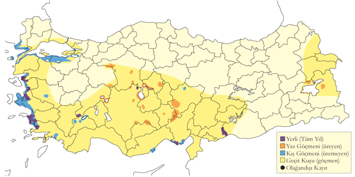
Üreme
Yuvalama alanı: Tuzlu veya aşırı tuzlu sığ göllerde koloniler halinde yuvalar. Yuva alanları deniz seviyesinden 1100 metre rakıma kadar çıkabilir. Türkiye’deki kolonilerdeki kuş sayısı 100 ile 23.000 arasında değişmektedir.
Yuvası: Koloni, sığ suda, alçak bir adaya veya kurumuş bir çamur düzlüğüne kurulur. Yuva, çamurdan yapılmış kesik bir koni şeklindedir; genellikle 25-40 cm, nadiren 10 cm yüksekliğinde olur ve ters çevrilmiş bir saksıya benzer. Zamanla kuruyarak son derece sert bir hal alır. Yuvanın ortası çukurdur ve zeminine tüyler eklenebilir.
Yumurta sayısı: Tek bir yumurta bırakır.
Üreme dönemi: Yumurtlama dönemi nisan başı ile haziran ortası arasındadır. Yumurtlama tarihi, alandaki su seviyesiyle ilişkili olabilir. Kuşlar, üreme döneminde oldukça hassastır ve rahatsızlık nedeniyle tüm koloniyi terk edebilirler. Yuvayı terk eden kuşlar o yıl başka bir yerde tekrar yuva kurmaz ve yumurta bırakmaz. EGE. Gediz Deltası’ndaki tuzlalarda 1995 yılında 1450 çift flamingonun ürediği gözlenmiş, koloni 15 Mart’ta oluşmaya başlamış ancak mayıs sonunda terkedilmiştir (Eken, 1997a). İÇA. Tuz Gölü, flamingoların en düzenli ürediği ve en büyük kolonilere ev sahipliği yapan aşırı tuzlu bir göldür. Burada 31 Mart 1969’da kur ve çiftleşme davranışları kaydedilmiştir (Warncke, 1971). 18 Mayıs 1970’te bulunan 5000 yuvanın %70’inde yumurta, 20’sinde yavru, 10’unda ise boş yuvalar gözlenmiştir. Bu, üremenin nisan başında başladığını gösterir (Warncke, 1971). 24 Mayıs 1972’de neredeyse her yuvada bir haftalık yavrular görülmüştür. 15 Haziran 1973’te 1-3 haftalık yavrular kaydedilmiş, bu da yumurtlamanın nisan ortasında başladığını göstermiştir. 11 Haziran 1974’te 30-40 günlük yavrular gözlemlenmiş, yumurtlamanın nisan başında başladığını doğrulamıştır (Kahl, 1975). 6 Temmuz 1992’de gözlenen 1000-2000 yavrunun yaklaşık 4 haftalık olduğu tahmin edilmiştir. Haziran 1992’de yapılan havadan sayımda gölün güneyindeki koloninin yeri tespit edilmiş ve yürüyen yavruların koloniden 2-5 kilometre uzakta olduğu görülmüştür (Magnin & Yarar, 1997). Seyfe Gölü’nde 18-22 Haziran 1992 tarihleri arasında en büyüğü 15 günlük yavrular gözlenmiş, bu da yumurtlamanın mayıs başında başladığını göstermektedir. 1993’te 13 Mayıs’ta yapılan gözlemde kolonideki yuvaların çoğunun eski olduğu, 14 Haziran’da ise 200-500 yeni yuvanın yapıldığı ve çoğunun çamurunun henüz kurumadığı tespit edilmiştir. Bu yuvalardan yaklaşık 20 tanesinde yumurta bulunmuş ve üremenin yeni başladığı anlaşılmıştır. Aynı yıl, 70-80 flamingo yuvası üzerine bir ak pelikan kolonisinin yerleştiği gözlenmiştir. Ereğli Sazlığı’nda 10 Mayıs 1987’de önceki yıla ait olduğu düşünülen 35-40 yuva bulunmuş, 1 Haziran 1991’de üç küçük adada 1100 erişkin ve 227 yuva sayılmış, bunlardan sadece 68’inde yumurta tespit edilmiştir (Kirwan, 1992a). 16-17 Haziran 1993’te yapılan sayımda dört adada 300 çiftin ürediği, 17’sinin boş, 54’ünün yumurtalı ve 33’ünün ise en büyüğü bir haftalık yavrulara sahip olduğu belirlenmiştir (Magnin & Yarar, 1994). Yumurtlama en erken 10 Mayıs’ta başlamıştır. Sultansazlığı’nda 8-10 Haziran 1974’te 200 çiftin yuvalamaya henüz başladığı gözlenmiştir (Kahl, 1975).
Alttürler ve Sınıflandırma
Monotipik bir türdür.
Küçük Flamingo
Phoeniconaias minor, Lesser Flamingo, [Vinyet: Sulakalan] [Vinyet: Rastlantısal]
Rastlantısal konuktur.
10-16 Nisan 2006’da Ereğli Sazlığı’nda bir flamingo grubunun içinde tespit edilen kuş, Türkiye’deki ilk kaydı oluşturmuştur. Benzer tarihlerde İsrail’de de kaydedilmesi, bu kuşun yabani olduğu iddiasını desteklemiştir. Ardından 30 Ocak - 30 Nisan 2009’da Gediz Deltası’nda, 3 Haziran 2009’da Kulu Gölü’nde, 22 Nisan 2011’de Kulu Gölü’nde, 21 Ocak 2012’de Enez Lagünleri’nde, 15 Nisan ve 18 Haziran’da ve sonrasında 24 Ekim - 2 Kasım 2012 arasında Kulu Gölü’nde, 26 Nisan ve 11 Mayıs 2014’te ve 2015 yılında yine Kulu Gölü’nde görülmüştür.
İspanya ve Fransa’da yabani olduğu düşünülen kuşlar defalarca gözlenmiş, Güneybatı Moritanya’da en az bir kez üremiştir. Avrupa’daki bazı kayıtlar doğal yaşam parklarından kaçan kuşlara ait olabilir.
Üreme
Türkiye’de ürememektedir. Yayılış alanı Sahra altı Afrika’dır.
Alttürler ve Sınıflandırma
Monotipik bir türdür. Bu tür bazen Phoenicopterus cinsi altına yerleştirilir.
Küçük Batağan
Tachybaptus ruficollis, Little Grebe, [Vinyet: Sulakalan]
Yaygın ve çok sayıda bulunan yerli bir türdür. Kışın ve göç döneminde sayıları artar.
Bataklık sulakalanlarda nispeten az sayıda ürer. Üreme sonrası toplanmalara temmuzdan itibaren tüm bölgelerde rastlanır. Genellikle 300-500 kuşluk sürüler gözlenirken, Manyas, Erçek ve Van göllerinde 1000’den fazlası toplanabilir. En yüksek sayı Eylül 2000’de Sarıyar Barajı’nda kaydedilen 2625 kuştur.
Kışın çoğunlukla batı ve orta kesimlerdeki tatlı su gölleri, bataklıklar, göletler, kıyısal sulakalanlar ve az sayıda denizde görülür. En yüksek sayılara batı ve güney bölgelerinde, özellikle Bafa Gölü, Büyük Menderes Deltası, Köyceğiz Gölü ve Göksu Deltası’nda rastlanır. Marmara Bölgesi’nde kışın yaygındır. 3 Şubat 1991’de Küçükçekmece Gölü’nde 1120 birey sayılmıştır. Zonguldak Ereğli’de, kuşların ekim ayının ikinci yarısında gelip mart sonuna kadar kaldıkları gözlenmiştir. İç Anadolu ve Doğu Anadolu’dakiler kışın Ege ve Akdeniz bölgelerine iner, mart ayında üreme bölgelerine geri dönerler. İç Anadolu ve Göller Bölgesi’nde ılıman geçen kışlarda yüksek sayılarda toplanır. 11 Şubat 2005’te Sarıyar Barajı’nda 538, 20 Ocak 2005’te Eğirdir Gölü’nde 1155 birey sayılmıştır.
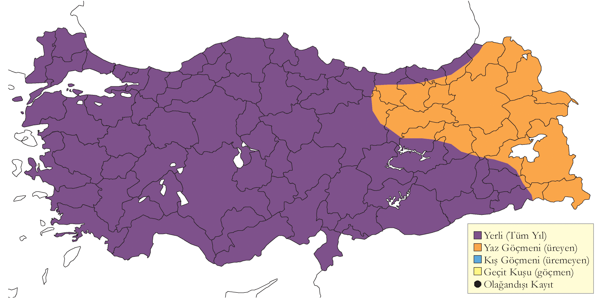
Üreme
Yuvalama alanı: Sık bitkilerle kaplı tatlı ve acı göller, bataklıklar, aynası olan sazlıklar ve eski nehir yataklarında ürer. Üremesi ve yuvalaması için yeterli bitki örtüsü olduğu sürece çok küçük göletleri bile kullanabilir.
Yuvası: Genellikle canlı bitkilere tutunan yüzer yuva yapar. Yuva, sucul bitkiler öbeğinden oluşur ve ortasında hafif bir çukur vardır.
Yumurta sayısı: Türkiye’de gözlenen yumurta sayısı 4-5 arasındadır. Türkiye dışında ise yumurta sayısı çoğunlukla 4-6, istisnai olarak 2-7 olur. Gözlenen yavru sayısı dağılımı şu şekildedir: 2 yuvada 1, 4 yuvada 2, 2 yuvada 3, 2 yuvada 4, 1 yuvada 5 yavru. Daha düşük yavru sayıları, kayıplardan kaynaklanır.
Üreme dönemi: Üreme dönemi mart ayında başlar ve bölgeye göre değişiklik gösterir. İlk yumurtalar genellikle nisan başında ortaya çıkar ve üreme ağustos ayına kadar devam eder. MAR. En erken yavru 4 Haziran 1996’da İstanbul Belgrad Ormanı’nda görülmüştür. 2 Haziran 2006’da Uluabat Gölü’nde bir yuvada beş yumurta bulunmuştur. KAR. Kızılırmak Deltası, tür için en önemli üreme alanıdır. 1992 yılında üreme popülasyonunun 350-500 çift olduğu tahmin edilmiş ve seyrek koloniler halinde ürediği, üreme sıklığının 100 hektarda 25-45 çift olduğu belirlenmiştir (Hustings & Dijk, 1994). İki yetişmiş yavru 10 Haziran 1995’te, dört yavru ise 15 Temmuz 1971’de görülmüş, 1992 yılındaki kapsamlı araştırmada ilk yavruya 26 Mayıs’ta rastlanmıştır (Dijksen & Kasparek, 1985; Hustings & Dijk, 1994). EGE. 5 Mayıs 1995’te Bafa Gölü’nde gözlenen dört yavru, yumurtlama tarihinin nisan başı olduğuna işaret eder. AKD. Çukurova’da en erken gözlem, 4 Mayıs 1987’de hav tüyleri bulunan bir yavru olmuştur (Van der Have vd., 1988). 18 Mayıs 1970’te Antalya çevresinde büyümüş yavrular gözlenmiştir. İÇA. 18 Mayıs 1998’de Uyuz Gölü’nde ve 19 Mayıs 1998’de Eşmekaya’da dörder yumurtalı yuvalar tespit edilmiştir. Sultansazlığı’nda karayoluna paralel uzanan kanal boyunca erişkinlerin kuluçkaya yattıkları gözlenmiş, 14 Mayıs 2004’te bir yuvada beş yumurta görülmüştür. 8 Ağustos 1971’de Akşehir Gölü’nde kuluçkada erişkinler gözlenmiştir. Sultansazlığı’nda en erken yavru 7 Haziran 1982’de kaydedilmiştir (Kasparek, 1985). DOA. 19 Haziran 2004’te Erçek Gölü’nde yumurtlama süreci devam eden bir yuvada iki yumurta bulunmuş, bir başka yuvada ise yeni çıkmış iki yavru gözlenmiştir. 18 Ağustos 1972’de Sodalı Göl’de hala kuluçkada olan bir erişkin gözlenmiş ve 25 Haziran’dan itibaren yedi farklı yavru gözlemi kaydedilmiştir. Geç tarihli kayıtların muhtemelen ikinci kuluçka ile ilgili olduğu düşünülmektedir. GDA. 7 Haziran 2006’da Birecik’te yumurtadan yeni çıkmış bir yavru görülmüştür.
Alttürler ve Sınıflandırma
Batı Anadolu’da nominat ruficollis alttürü bulunur. Doğu Anadolu’da capensis alttürü olabileceği iddia edilmiştir (Roselaar, 1995). Avrupalı ruficollis ve Afro-Asyalı capensis ve albescens alttürlerinin göz renginin farkıyla rahatlıkla tespit edilebileceğini belirtmiştir (Swelm, 2001). Dolayısıyla Roselaar’ın varsaydığı alttür, albescens, hatta Irak’ta bulunan iraquensis olabilir. Doğu Anadolu’daki kuşların hangi alttüre ait olduğu kesinleştirilmelidir.
Kulaklı Batağan
Podiceps auritus, Horned Grebe (Slavonian Grebe), [Vinyet: Sulakalan] [Vinyet: VU (2016)]
Nadir bir kış konuğudur.
Karadeniz ve Marmara kıyılarında eylül sonu ile mayıs başı arasında nadiren rastlanır. 2008’e kadar 21 bilinen kaydı vardır. 2 Ekim 1972’de Küçükçekmece açıklarında görülen 6 kuş en kalabalık gruptur. Zonguldak Çatalağzı açıklarında, bir kara boyunlu batağanla birlikte görülen kuş, şubat sonundan 11 Mart 1948’e kadar konaklamıştır.
Karadeniz ve Marmara kıyıları dışında çok nadir görülür. 29 Ocak 1997’de Balıkesir Ören’de dört kuş, şubat 1989’da Göksu Deltası’nda bir kuş, 22 Nisan 1999’da Diyarbakır Çınar-Göksu Barajı’nda bir kuş, 27 Ocak 2008’de Sarıyar Barajı’nda ve 27 Ocak 2014’te Sapanca Gölü’nde birer kuş gözlenmiştir.
Tek bir yaz kaydı vardır: Üreme giysisindeki bir kuş, 1 Temmuz 1985’te Çaldıran’da gözlenmiştir.
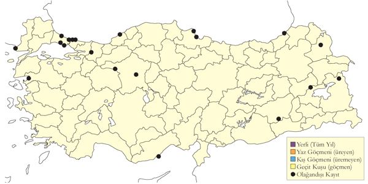
Üreme
Türkiye’de ürememektedir. Üreme dönemindeki yayılış alanı K. Avrasya, Kanada ve K. ABD’dir.
Alttürler ve Sınıflandırma
Monotipik bir türdür.
Kızıl Boyunlu Batağan
Podiceps grisegena, Red-necked Grebe, [Vinyet: Sulakalan]
Lokal olarak ve az sayıda bulunan bir yaz konuğu, yaygın ancak nadir bulunan bir geçit türü ve kış konuğudur.
İç Anadolu’da Ereğli Sazlığı ve Sultansazlığı gibi büyük sulakalanlarda, Doğu Anadolu’da ise küçük ve bataklık sulakalanlarda yuvalar, deniz seviyesinden 2250 metre yüksekliğe kadar çıkar. Bu tip küçük sulakalanlar nadiren ziyaret edildiğinden, gözlem kayıtlarının oluşturduğu izlenimden daha yaygın olabilir. Üreme alanlarına martın üçüncü haftasında gelir ve ekim sonuna kadar kalır. Üremeyen veya üremesi başarısız olan bireyler yazın küçük topluluklar oluşturabilir. Temmuz 2001’de Sodalı Göl’de 40 birey, 9 Haziran 1998’de Eşmekaya Sazlığı’nda 73 kuş (Eken & Magnin, 1999) toplanmıştır.
Kışın Marmara ve Karadeniz bölgelerinde az sayıda, nadiren içsularda görülür. Ocak 1970’de 10, 1-3 Eylül 1980’de Burdur Gölü’nde 150 birey sayılmıştır.
Yirminci yüzyılın ilk yarısından gelen kayıtlar, bu türün eskiden daha yaygın olduğunu göstermektedir. 1945-46 yıllarında Mogan Gölü’nde yaklaşık 20 çift üremiştir. Ancak Mogan Gölü’ndeki son üreme 1998 yılında kaydedilmiştir. Son yıllarda sulakalanların kurutulması nedeniyle İç Anadolu’da sayıları azalmıştır.
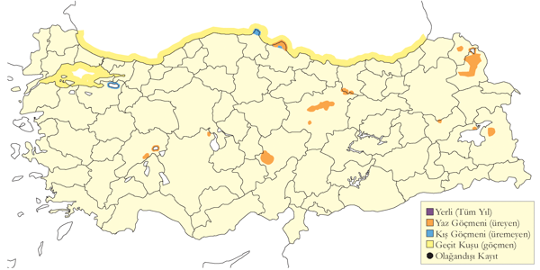
Üreme
Yuvalama alanı: Kenarları sazlık göller, bataklıklar ve göl aynası olan sazlıklarda ürer.
Yuvası: Çoğunlukla büyüyen bir bitkiye tutturulmuş yüzer yuvası, çürümüş su bitkilerinden oluşur ve ortasında çukur olan alçak bir yapıdır.
Yumurta sayısı: Türkiye’de tek bir yuvada 3 yumurta görülmüş, Türkiye dışında yumurta sayısı genellikle 4-5 arasındadır. Gözlenen yavru sayısı çoğunlukla 1, nadiren 3’tür.
Üreme dönemi: Üreme nisan sonu ile mayıs başında başlar, yumurtlama mayıs ayında gerçekleşir. Yavrular haziran ayında çıkar ve temmuz ile ağustos aylarında gelişimlerini tamamlayarak yuvadan ayrılır. AKD. 12 Nisan 1973’te Karamık Gölü’nde kur davranışı gözlenmiştir. İÇA. Çeşitli alanlarda nisan sonu ile mayıs başında kur davranışı gözlenmiştir. 27 Mayıs 1993’te Eşmekaya’da bir yumurtalı bir yuva, 20 Mayıs 1998’de ise iki yumurtalı bir yuva görülmüş ve yumurtlama sürecinin devam ettiği düşünülmüştür. Aynı alanda 21 Haziran 1998’de gelişmiş bir yavru gözlenmiştir. Ereğli Sazlığı’nda 19 Mayıs 1971’de 3 yumurtalı bir yuva bulunmuştur. 13 Temmuz 1977’de Akşehir Gölü’nde, 17 Temmuz 1986’da Kulu Gölü’nde yavrular kaydedilmiştir. Sultansazlığı’nda 1982’nin ağustos sonunda yavrulara rastlanmıştır (Kasparek, 1985). DOA. 29 Mayıs 1969’da Van yakınında ve 1 Haziran 1990’da Çaldıran Gölü’nde yuva yapımına rastlanmıştır. Kars yakınlarındaki bir alanda 18 Temmuz 1992’de yuva yapımı gözlenmiş ve 27 Haziran itibarıyla toplam 6 yavru kaydedilmiştir.
Alttürler ve Sınıflandırma
Türkiye’de nominat alttürü bulunur.
Bahri
Podiceps cristatus, Great Crested Grebe, [Vinyet: Sulakalan]
Yaygın olarak ve çok sayıda bulunan bir yerli tür ve kış konuğudur.
Ülke genelinde yaygın olsa da, İç Anadolu’nun geniş bataklık sulakalanlarında ve Doğu Anadolu’da en çok sayıda miktarda bulunur. Uluabat Gölü’nde 400 çift, Kızılırmak Deltası’nda 250-300 çift üremektedir. Küçük batağanın tercih ettiği küçük gölet ve bataklıkları kullanmaz ancak baraj göllerini sıkça kullanır.
Üreme dönemi sonrasında ve kışın daha yaygındır, yüksek sayılarda görülür. Kışlayan bireyler ekim başında gelir ve nisan sonuna kadar kalırlar. Kıyısal bölgelerde, Kızılırmak ve Yeşilırmak deltaları, Küçükçekmece Gölü, Büyük Menderes Deltası’nda yoğunlaşır. Bu alanlarda sert geçen kışlarda binlercesine rastlanabilir. Karadeniz kıyılarında yüksek sayılarda gözlenmiştir. Büyük baraj gölleri önemli sayılar barındırır; Sarıyar’da 5500, Karakaya’da 12.000 ve Keban’da 10.000 kuş sayılmıştır. Kış Ortası Su Kuşu Sayımları’nda, 2005 yılında sayılan yaklaşık 31.000 kuş en yüksek değerdir.
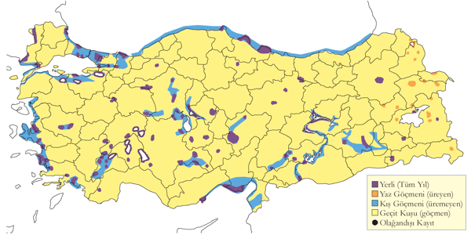
Üreme
Yuvalama alanı: Kıyılarında sazlar olan göllerde yuvalar. Genellikle sazlara, nilüferlere ve su altındaki dallara yuvalarını kurar. Sığ sularda yuva su tabanına oturtulurken, daha derin sularda yüzer yuva bir bitkiye iliştirilir.
Yuvası: Yuva, sucul bitkilerden oluşan alçak bir öbek şeklindedir ve ortasında sığ bir çukur bulunur. Nilüferler veya sazlar gibi bitkilere tutturulmuş yüzer yuvalar yaygındır.
Yumurta sayısı: Türkiye’de gözlenen yumurta sayısı 4-5 arasında değişir. Gözlenen yavru sayısı ise 1 ila 5 arasında kaydedilmiştir.
Üreme dönemi: Yumurtlama mart sonunda başlar ve haziran sonuna kadar yavrular yuvadan ayrılabilir. Yuva yapımı nisan sonuna kadar devam edebilir (Welch & Welch, 1998b). MAR. Uluabat Gölü’nde ortalama yavru sayısı 2,6 (231 yuvada) olarak tespit edilmiştir (Welch & Welch, 1998b). 25 Nisan 2003’te kuluçkaya yatan birçok çift ve 19 Haziran 1999’da yetişmiş yavruyla dolaşan çiftler gözlenmiştir. 13 Mayıs 2007’de yaklaşık 3 haftalık yavrulara rastlanmış ve yumurtlamanın mart sonunda gerçekleştiği düşünülmüştür. Yuva yapımı 25 Nisan 1970’te gözlenmiş, 2 Haziran 1967’de biri dört, diğeri beş yumurtalı iki yuva bulunmuştur. 23 Nisan 1966’da yumurtlama süreci devam eden üç yuva tespit edilmiş, 24 Mayıs 1966’da sezonun ilk yavrusu gözlenmiştir. İznik Gölü’nde 6 Haziran 1966’da çok küçük yavrusu olan dört çift gözlenmiştir. EGE. 13 Mayıs 1899’da yaklaşık 20 yuva tespit edilmiş ve 21 Mayıs ile 21 Eylül arasındaki geniş dönemde yavrular gözlenmiştir (Selous, 1900). KAR. Kızılırmak Deltası’nda 27 Nisan 1992’de yumurtalı yuvalar tespit edilmiş ve ilk yavrular 20 Mayıs’ta gözlenmiştir (Hustings & Dijk, 1994). AKD. Beyşehir Gölü’nde 1 Mayıs 1967’de yuva yapımı tespit edilmiş, 10 Haziran’dan itibaren yavrular görülmüştür. Göksu Deltası’nda 14 Eylül 1972’de sekiz uçamayan iri yavru gözlenmiştir. İÇA. Hotamış Gölü’nde nisan sonundan itibaren kuluçkaya yatılmıştır (Kirwan, 1993a). Diğer alanlarda en erken yavru 6 Haziran’da gözlenmiştir. DOA. Van Gölü’nde temmuz ortasında kuluçkaya yatan erişkinler ve 8 Haziran 1975’te ilk yavrular tespit edilmiştir. Bu durum, yumurtlamanın mayıs başında gerçekleştiğini göstermektedir.
Alttürler ve Sınıflandırma
Türkiye’de nominat alttürü bulunur.
Kara Boyunlu Batağan
Podiceps nigricollis, Black-necked Grebe (Eared Grebe), [Vinyet: Sulakalan]
Lokal olarak bulunan bir yaz konuğu, yaygın ve nispeten çok sayıda görülen bir geçit türü ve kış konuğudur.
Üreme alanlarında nisan ortasından ağustos ayına kadar bulunur. Koloniler halinde ürer, yüzlerce çift bir arada görülebilir. İç Anadolu’da oldukça nadirdir. Son zamanlarda, örneğin Kulu Gölü’nde (Richardson, 2003), sayıları ciddi şekilde azalmıştır. Doğu Anadolu’da 2500 metre rakıma kadar olan, genellikle küçük, ötrofik ve bataklık sulakalanlarda ürer. Kars Kuyucuk Gölü’nde 330 çift bulunur. Üremede başarısız olan bireyler temmuz ayında gözde sulakalanlarda toplanır. Bu topluluklara sonraki iki ay boyunca üremeyi bitiren bireyler ve ülke dışından gelenler katılır. Bu gruplar birkaç bini bulabilir. Örneğin Acıgöl’de 1800, Kulu Gölü’nde 2000, Erçek Gölü’nde 9 Eylül 2000’de 10.000 kuş (Birding World 1998) ve Sodalı Göl’de 4000-5000 kuş kaydedilmiştir. Doğu Anadolu’da bu tüy döküm alanlarında aralık başına kadar kalabilirler.
Önemli sayılarda kışlar. Karadeniz ve Marmara kıyılarında, lokal olarak korunaklı koylar ve limanlarda ekim ortası ile nisan ortası arasında düzenli olarak görülür (Albrecht 1986). Kışlama bölgelerinde mayıs başına kadar kalabilir. Yüksek sayılarda Göller Bölgesi’nde bulunabilir. Burdur Gölü’nde düzenli olarak 5000 birey, Ocak 1970’de ise 18.662 birey sayılmıştır. İç Anadolu’da az sayıda kışlar. Son yıllarda yapılan Kış Ortası Su Kuşu Sayımlarında, ülke toplamı 2000 kuşun altına inmiştir.
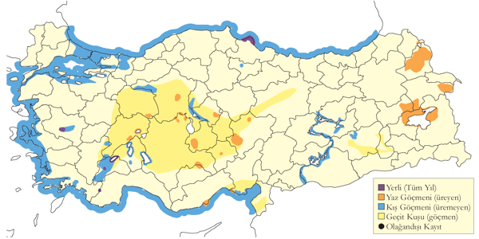
Üreme
Yuvalama alanı: Sazlıkların ve sualtı bitkilerinin bulunduğu sığ tatlı veya acı göllerde yuvalar. Genellikle küçük koloniler oluşturur, ara sıra tek başına da ürer.
Yuvası: Yüzer yuvası bir sucul bitkiye iliştirilir. Yuva, sucul bitkilerden oluşan alçak bir öbektir ve ortasında sığ bir çukur bulunur.
Yumurta sayısı: Türkiye’de gözlenen yumurta sayısı 1 ile 6 arasında değişir. Yumurta sayısının dağılımı, 16 yuvada 1, 11 yuvada 2, 8 yuvada 3, 5 yuvada 4, 1 yuvada 5 ve 1 yuvada 6 adet olarak kaydedilmiştir.
Üreme dönemi: Üreme nisan ortasında başlar. Yavruların çıkışı genellikle mayıs sonu ile haziran ayı arasında gerçekleşir, büyümüş yavrular ise temmuz ayında gözlenir. MAR. Uluabat Gölü’nde 20 Haziran 1999’da 1-2 haftalık yavrularını gezdiren birkaç çift gözlenmiş ve yumurtlama tarihinin 21 Mayıs civarında olduğu tahmin edilmiştir. KAR. Kızılırmak Deltası’nda Mayıs 1992’de kur davranışı tespit edilmiş, 11 Mayıs’ta bir kuşun, muhtemel bir yuvadan kalkan düşmanı alandan uzaklaştırma davranışı gösterdiği gözlenmiştir (Hustings & Dijk, 1994). AKD. Çukurova sulakalanlarında 14 Nisan 1987’de kur davranışı görülmüş, Karamık Gölü’nde 18 Temmuz 1972’de yavrusu olan iki çift ve 29 Temmuz 1972’de Seyhan Barajı’nda üç yavrulu bir erişkin gözlenmiştir. İÇA. Kulu Gölü’nde 13-15 Temmuz 1971’de yüzen su bitkilerinden oluşan bir adanın kenarında 120 yuva tespit edilmiş, 42 yuvada yumurta bulunmuş, geri kalan yuvalardaki yavruların yuvayı terk ettiği düşünülmüştür. 22 Temmuz 1971’de Kulu Gölü’nde 13 yuvada 1-4 yumurta sayılmış, bir yanda yüzen yavrular, diğer yanda yuva yapan erişkinler gözlenmiştir (Kasparek, 1987). Mogan Gölü’nde nisan başından itibaren yaz konuğu olup, nisan ortasında çiftleşme ve kur davranışları gözlenmiştir (Wadley, 1951). Hotamış Gölü’nde iki koloni toplam 20-25 çiftten oluşmuştur (Kirwan, 1993a). Çöl ve Uyuz Gölleri’nde 5 çiftin kur yaptıkları 1 Haziran 1991’de gözlenmiş, 5 Temmuz 1991’de iki yavrulu bir çift tespit edilmiştir. En erken yavru kaydı ise 31 Temmuz’dadır. DOA. Kuyucuk Gölü’nde 18 Temmuz 1992’de 196 yuva sayılmış, 2000’li yıllarda bu sayı 330 çift olmuştur. Diğer alanlarda en erken yavru kaydı 19 Temmuz’dadır.
Alttürler ve Sınıflandırma
Türkiye’de nominat alttürü bulunur.
Kızıl Gerdanlı Dalgıç
Gavia stellata, Red-throated Loon, [Vinyet: Deniz]
Nispeten yaygın ancak az sayıda bulunan bir kış konuğudur.
Ekim sonu ile haziran başı arasında az sayılarda Orta ve Doğu Karadeniz kıyılarında görülür. İstisnai olarak kalabalık gruplar oluşturabilir. 20 birey 9 Ocak 1969’da Yeşilırmak ağzında ve 24 birey 23 Şubat 2008’de Kızılırmak Deltası açıklarında gözlenmiştir.
Üremeyen bireyler ilkbahar sonunda ve yazın genellikle Karadeniz kıyılarında, daha nadir olarak iç bölgelerde bulunur. Bir birey 14 Haziran 1977’de Van Gölü kıyısında, Ahlat’ta (Beaman, 1986), yaz giysisinden tüyleri kalmış bir birey ise 16 Temmuz 2003’te Tödürge Gölü’nde (Sivas) gözlenmiştir.
Büyük ihtimalle İstanbul çevresinden toplanmış iki tahnit, İstanbul’da Saint Joseph Müzesi’nde sergilenmektedir (Kirwan, 1997).
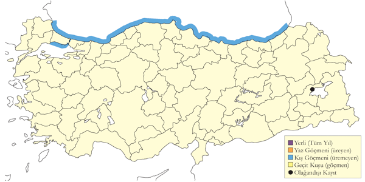
Üreme
Türkiye’de ürememektedir. Üreme dönemindeki yayılış alanı K. Kuzey Amerika ve K. Avrasya’dır.
Alttürler ve Sınıflandırma
Monotipik bir türdür.
Kara Gerdanlı Dalgıç
Gavia arctica, Black-throated Loon, [Vinyet: Deniz]
Karadeniz’de çok sayıda, diğer denizlerde az sayıda bulunan bir kış konuğudur.
Karadeniz ve Marmara kıyılarında eylül başı ile nisan arasında yaygın ve bol bulunan bir kış konuğudur. Özellikle Orta ve Doğu Karadeniz’de en yüksek sayılarda rastlanır. Kışlama döneminin sonlarına doğru Karadeniz kıyısındaki kuşların sayısı, güneyden gelenlerin toplanmasıyla artar ve şubat sonu ile nisan başı arasında zirve yapar. Artvin açıklarında 25-27 Ocak 1967’de 1500, 26 Şubat 2006’da 2100 birey kaydedilmiştir. Yeşilırmak Deltası açıklarında 9-10 Ocak 1969’da saatte 50 bireyin batıya uçtuğu görülmüştür. Ege ve Akdeniz kıyılarında oldukça seyrektir, Göksu Deltası, Çukurova sulakalanları ve Hatay’da ise nadir görülür. İçsularda nadiren rastlanır; 1996’da Ankara Bayındır Barajı, Haziran 1965’te Burdur Gölü, Haziran 2005’te Aygır Gölü ve Akdeniz kıyısında rastlanmıştır.
Üremeyen kuşlar nadiren Orta ve Doğu Karadeniz kıyılarında yaz aylarında görülebilir, bazı bireylerde kur davranışı bile gözlenmiştir. Van Gölü’nde Haziran 1978, Haziran 1983, Temmuz 1987 ve Temmuz 1995’te görülmüş, son kayıt suyun sodalı özelliği nedeniyle tüyleri beyazlaşmış bir bireye aittir.
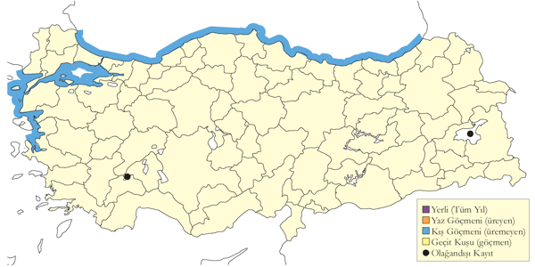
Üreme
Türkiye’de ürememektedir. Üreme dönemindeki yayılış alanı K. Avrasya ve B. Alaska’dır.
Alttürler ve Sınıflandırma
Türkiye’de nominat alttürü bulunur.
Buz Dalgıcı
Gavia immer, Great Northern Loon, [Vinyet: Deniz] [Vinyet: Rastlantısal]
Rastlantısal konuktur.
Dört güncel kaydı bulunmaktadır. Yaz giysisinde bir kuş, 13 Mayıs 1964’te İstanbul Büyükçekmece açıklarında gözlenmiştir (Warncke, 1964--65). 29 Nisan 1968’de aynı bölgede, bazıları üreme giysisine girmeye başlamış toplam 8 kuş kaydedilmiştir (Groh, 1968). 27 Mart 1981’de Tekirdağ Şerefli Deresi ağzında bir birey görülmüş (Goriup & Parr, 1983), 13 Mayıs 1989’da Göksu Deltası’nda ölü bir kuş bulunmuştur (Kirwan & Martins, 1994).
İstanbul Robert Kolej’de bulunduğu söylenen bir tahnitin (Mathey-Dupraz, 1920–24; Kasparek, 1990), 1996’daki envanter çalışmasında bulunamadığı belirtilmiştir (Kirwan, 1997). Ancak, Robert Kolej’deki birçok tahnitin 1992’den sonra zarar gördüğü veya yok olduğu bilinmektedir. Şans eseri, Kasparek 1986’daki ziyaretinde bu tahnitin bir fotoğrafını çekmeyi başarmıştır.
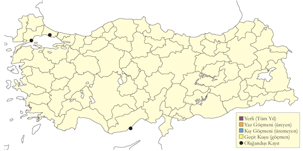
Üreme
Türkiye’de ürememektedir. Üreme dönemindeki yayılış alanı K. Kuzey Amerika ve K. Avrasya’dır.
Alttürler ve Sınıflandırma
Monotipik bir türdür.
Fırtınakırlangıcı
Hydrobates pelagicus, European Storm Petrel, [Vinyet: Deniz]
Ege ve Akdeniz sularında nadir rastlanan bir yaz konuğudur.
Yakın zamana kadar yalnızca birkaç kaydı bulunan nadir bir konuk olduğu düşünülmekteydi. Ancak, 6 Ağustos 2010’da Didim açıklarında iki kuş fotoğraflanmış (Balmer & Murdoch, 2011) ve üremeyen bir popülasyonun varlığı tespit edilmiştir (Onmuş et al., 2022). Bunu takiben ağustos ve ekim ayları arasında bu sularda düzenli olarak ve Bozcaada ile Kaş arasında az sayıda kaydedilmiştir.
2010 yılı öncesi kayıtlar şu şekildedir: 15 Mart 1972’de İzmir Karaada açıklarında 6 birey, 3 Mart 1972’de Kaş açıklarında 1 birey, 29 Nisan 1988’de Kaş’ın 10 km batısında 3 birey (Haaß, 1990), ve 17 Mart 1992’de aynı bölgede 7 birey tespit edilmiştir (Eken, 1997c). Karadeniz’den de kayıtlarının bulunduğuna değinilmiştir (Hollom et al., 1988).
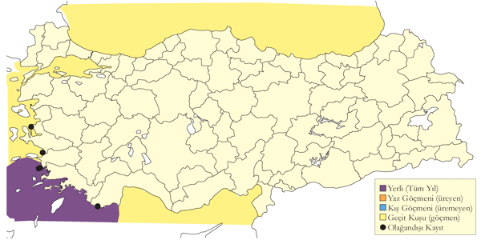
Üreme
Türkiye’de ürediği bilinmez. Yunanistan’ın Ege Adalarında daha önce iki kez ürediği ispatlanmıştır. Orada muhtemelen düzenli olarak üremektedir (Handrinos ve Akriotis 1997).
Alttürler ve Sınıflandırma
Akdeniz popülasyonu (Lalanne et al., 2001) tarafından tanımlanan melitensis alttürüne aittir. Bu alttür kanat ölçüleri ve ağırlığı ile nominat alttürden ayrılır.
Atlantik Boz Yelkovanı
Calonectris borealis, Cory’s Shearwater, [Vinyet: Deniz]
Rastlantısal konuktur.
Bir kaydı bulunur. 1 birey “Milleyha ve sahil şeridi” alanında (Hatay) 13 Ocak 22 tarihinde A. Gümüş, A. Ilbeyi, E. Yogurtcuoglu tarafından kaydedildi.
Üreme
Türkiye’de ürememektedir. [EKLENECEK]
Alttürler ve Sınıflandırma
Boz Yelkovan’dan kısa zaman önce ayrılmıştır.
Boz Yelkovan
Calonectris diomedea, Scopoli’s Shearwater, [Vinyet: Deniz]
Nispeten yaygın ve nispeten az sayılarda bulunan yerli ve yarı göçmen bir türdür.
Krüper zamanından bu yana birçok araştırmacı, Ege ve Akdeniz kıyılarında ürediğini düşünmüştür. Birkaç noktada çok az sayıda ürediği tahmin edilmektedir.
Mart başından ekim ortasına kadar oldukça yaygın bir yaz konuğudur ve sayıları orta düzeydedir. Eylül sonunda daha kalabalık gruplar oluşturur. Çanakkale Bademli ile Midilli arasında ağustos ayında bir saatte batıya uçan 65 kuş sayılmış, İzmir’in güneyinde eylül ayında ve Bodrum Yarımadası’nda haziran ile temmuz aylarında 50’lik gruplar gözlenmiştir. Çanakkale Boğazı’nda 10 Mart 2001’de 100 kuş sayılmıştır. Marmara Denizi’nde düzensizdir; İstanbul Boğazı’nda sonbaharda iki kez, Rize’de yelkovanlarla beraber bir kez tespit edilmiştir.
Kışın, mevcut kayıtlara kıyasla sanıldığından daha yaygın olabilir. İzmir ve Mersin açıklarında yapılan araştırmalarda teknelerde bulunan kuş gözlemcisi bilim insanları tarafından yüzlercesi gözlenmiştir. Kışı çoğunlukla Batı Afrika kıyılarında geçirir.
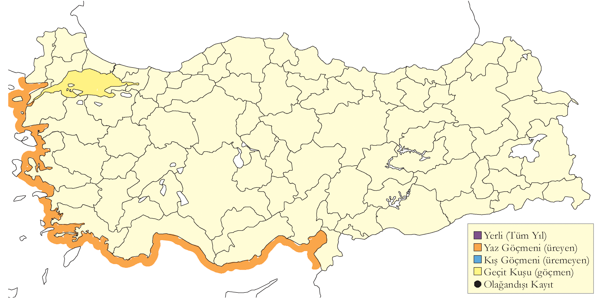
Üreme
Yuvalama alanı: Ege ve Akdeniz’de kıyıdan uzak adalarda ve kıyıdaki dik yarlarda ürediği varsayılmıştır.
Yuvası: Türkiye dışında denize bakan dik yarlarda koloniler halinde ürer.
Yumurta sayısı: Nisan ve mayıs ayları arasında tek yumurta bırakır.
Üreme dönemi: Üreme dönemi, nisan ve ağustos arasındadır. EGE. 2013 yılında İzmir Seferihisar açıklarındaki bir adada üredikleri konusunda şüpheler doğmuştur. Ancak bu yıla kadar ürediği ispatlanamamıştır. AKD. Kalkan ve Kaş arasındaki Heybeliada’da 2010 Ağustos ortasında akşamüstü kıyıya yakın gözlenen sürüler, adada bir üreme kolonisi olduğunu düşündürmüştür.
Alttürler ve Sınıflandırma
Monotipik bir türdür. Cabo Verde adalarında üreyen edwardsii ve Azorlar, Madeira, Kanarya Adaları ve Portekiz açıklarındaki Berlenga Adaları’nda üreyen borealis taksonları, yakın zamanda tür seviyesine yükseltilmiştir. Bu çalışmadan önce çıkan birçok kaynakta İngilizce ismi Cory’s Shearwater olarak geçmektedir. Bu İngilizce isim artık sadece Kuzey Atlantik kuşları için kullanılmaktadır.
Külrengi Yelkovan
Ardenna grisea, Sooty Shearwater
Rastlantısal konuktur.
Bir kaydı bulunur. 1 birey “Milleyha ve sahil şeridi” alanında (Hatay) 13 Ocak 22 tarihinde A. Gümüş, A. Ilbeyi, E. Yogurtcuoglu tarafından kaydedildi.
Üreme
Türkiye’de ürememektedir. [EKLENECEK]
Alttürler ve Sınıflandırma
Türkiye’de görülen birey Kızıldeniz ve Hint Okyanusunda bulunan/Atlantik kıyılarında bulunan leucogaster alttürüne aittir.
Yelkovan
Puffinus yelkouan, Yelkouan Shearwater, [Vinyet: Deniz] [Vinyet: VU (2016)]
Bütün kıyılarda yaygın ve çok sayıda bulunan bir yerli türdür.
Karadeniz, Ege ve Akdeniz kıyılarında yıl boyunca görülse de sayıları mevsimsel olarak değişiklik gösterir. Kış sonunda ve ilkbahar başında Karadeniz ve İstanbul Boğazı’nda on binlercesi bir arada bulunur. İstanbul Boğazı’ndan geçen kalabalık sürüler, uzun zamandır araştırma konusu olmuştur. 18-22 Nisan 1966’da İstanbul Boğazı’nda saatte 6800, Çanakkale Boğazı’nda ise saatte 8200 kuşun her iki yöne uçtuğu kaydedilmiştir. 3 Şubat 2011’de İstanbul Boğazı’nda dört saatlik gözlemde toplam 55.683 birey sayılmıştır. Aynı yazarlar tarafından Şubat 2012’de dört saatte 75.000, Şubat 2014’te ise 90.000 kuş sayılmıştır. Ege kıyılarında kışın daha az sayıda olduğu düşünülmektedir (Eken, 1997d). Akdeniz’de ise nispeten seyrek olarak görülür ve daha çok mart ile ekim ayları arasında gözlenir.
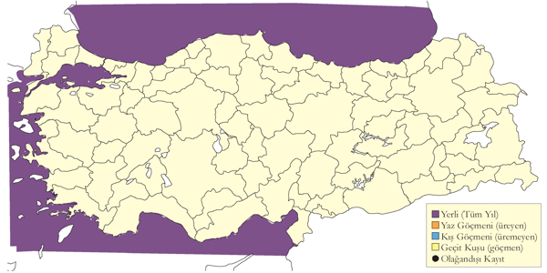
Üreme
Yuvalama alanı: Ege ve Akdeniz’de kıyıdan uzak adalarda ve kıyıdaki dik yarlarda ürediği varsayılmış, ancak şu ana kadar ispatlanamamıştır.
Yuvası: Türkiye dışında denize bakan dik yarlarda koloniler halinde ürer. Yuvaları yaklaşık 1 metre derinliğindeki oyuklarda veya kaya yığınlarının arasındaki doğal boşluklarda bulunur. Yuva yatağı, az ve değişen miktarda bitkisel materyalle döşenir.
Yumurta sayısı: Nisan ve mayıs ayları arasında tek yumurta bırakır.
Üreme dönemi: Üreme dönemi, nisan ve mayıs aylarında yumurtlama ile başlar.
Alttürler ve Sınıflandırma
Monotipik bir türdür. Yakın zamana kadar Batı Akdeniz’de üreyen allopatrik Balear yelkovanı P. mauretanicus ile aynı tür altında, 30 yıl öncesine kadar Atlantik Yelkovanı’nın P. puffinus bir alttürü olarak değerlendirilmiştir.
Kara Leylek
Ciconia nigra, Black Stork
Yaygın olarak nispeten az sayılardaki bir yaz konuğudur. Yaygın ve çok sık rastlanan bir geçit türü, lokal ve az sayıda bulunan bir kış konuğudur.
Ormanlık ve tepelik arazilerde lokal olarak görülen bir yaz konuğudur. İki farklı habitatta ürer: Birincisi, su kaynakları açısından zengin, akarsu, göl veya sulakalanların yakınındaki ormanlık alanlardır. İkincisi, kurak bölgelerde akarsu boylarındaki dik kayalık yarlardır. Kocaçay Deltası ve Kızılırmak Deltası gibi alanlarda yüksek yoğunlukta üreyebilir. Kızılırmak Deltası’nda 50’den fazla çift bulunur. Bilinen üreme alanlarının dışında temmuz ortasında görülmeye başlanır.
İlkbahar göçü mart ortasından haziran başına kadar sürer ve batı ile orta bölgelerde daha sık rastlanır. İstanbul Boğazı’nda Sarıyer tepelerinde yapılan gözlemlerde, mart ortasından mayıs sonuna kadar 2006’da 1118, 2010’da 1197 ve 2011’de 1246 kuş sayılmıştır (Üner et al., 2006; İKGT, 2010; Bilgin, Boyla & Topluluğu, 2011).
Sonbahar göçü ağustos başından kasım başına kadar devam eder, en yoğun dönem eylül başından ekim başına kadardır. İstanbul Boğazı’nda 1973 yılında yapılan sonbahar sayımında toplam 8318 kuş sayılmıştır; 18 Eylül 1978’de ise bir günde 5333 kuş gözlenmiştir. Son yıllarda bir günde tek noktada sayılan en yüksek değer, 20 Eylül 1995’te 2588 kuş olmuştur. 2008 yılında, 22 Eylül ile 10 Ekim arasında 6 farklı noktada yapılan kapsamlı bir çalışmada toplam 16.647 kuş sayılmış, bu sayı önceki rekoru ikiye katlamıştır. Ekim başında Çukurova’da da gözlenir. Borçka’da ise nadir olarak görülür.
Kızılırmak Deltası, Gediz Deltası ve Çukurova sulakalanlarında, ortalama 20 kuşluk küçük gruplar halinde kışlar (Eken, 1997d; Kirwan, 1993b; Demirci, 2002, 2003).
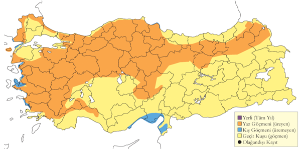
Üreme
Yuvalama alanı: Ormanlık bölgelerde ağaçlarda ve kurak bölgelerde kayalık yarlarda yuvalar. Hem yaprak döken hem ibreli yaşlı ağaçları kullanır.
Yuvası: Yuva, yerden 2,5-6,0 metre yükseklikte dal ve sopalardan yapılmış sığ çanak şekilli bir yapıdır. Çerçevesi yosun ve çimenlerle kaplanır. Yeni yuvalar küçük olabilirken, yıllar içinde kullanılan yuvalar büyür ve dikkat çeken bir hale gelir.
Yumurta sayısı: Türkiye’de gözlemlenen 29 yuvada yumurta sayısı 3 veya 4 olmuştur.
Yavru sayısı: Yavru sayısı 2-4 arasında değişmiş, 10 yuvada ortalama yavru sayısı 2,9 olarak kaydedilmiştir. Yerden yapılan gözlemlerde daha çok büyük yavruların görülebildiği, döllenmemiş yumurtaların ve ölmüş yavruların genellikle fark edilmediği hesaba katılmalıdır.
Üreme dönemi: Yumurtlama mart sonunda başlar, yavruların çıkışı mayıs sonuna kadar devam eder ve yavrular haziran sonu ile temmuz ayında palazlanarak yuvadan uçar. KAR. 13 Temmuz 1972’de Kızılırmak Deltası’nda iki yavru gözlenmiş, 23 Temmuz’da yapılan gözlemde kuşların yuvadan uçmuş olduğu düşünülmüştür (Dijksen & Kasparek, 1985). Yumurtlama tarihinin nisanın üçüncü haftası olduğu tahmin edilmiştir. 1992’de 17 Mart’tan itibaren iskan edilmiş yuvalar görülmüş, nisan sonunda ilk yumurtalar ve 26 Mayıs’tan itibaren yavrular ve genç kuşlar gözlenmiş, toplam üreyen popülasyonun 30-35 çift olduğu belirlenmiştir (Hustings & Dijk, 1994). İÇA. Ürgüp’te 22 Nisan 1971’de yuvada yumurtalar tespit edilmiş, 3 Haziran’da yuvada üç yavru gözlenmiştir. Kızılcahamam’da üç yumurtalı bir yuva bulunmuş ve ilk yumurtanın 6 Mayıs 1993’te koyulduğu tahmin edilmiştir. 29 Nisan 2007’de Aksaray’da içinde yumurta ve küçük bir yavru olan iki yuva bulunmuş, yumurtlamanın mart sonunda başladığı düşünülmüştür.
Alttürler ve Sınıflandırma
Monotipik bir türdür.
Leylek
Ciconia ciconia, White Stork
Yaygın olarak çok bulunan bir yaz konuğu ve geçit türüdür.
Yaygın ve bilinen bir yaz göçmenidir, en azından 2200 metre rakıma kadar üreyebilir. Üreyen popülasyonun 7000 ile 30.000 çift arasında olduğu tahmin edilmiştir (Kasparek, 1992), başka bir tahmine göre ise 15.000 ile 35.000 çift arasında olduğu belirtilmiştir (Tucker & Heath, 1994). 1993 baharında İç Anadolu’daki popülasyonun 1000 ile 3000 arasında olduğu tahmin edilmiştir (Parr et al., 1996). 1960’ların sonlarından itibaren üreme popülasyonunun %60 oranında azaldığı iddia edilmiştir (Kılıç & Kasparek, 1990). Ancak, bazı kıyı bölgelerinde popülasyonun sabit kaldığı, hatta bazılarında arttığı düşünülmektedir (Berk, 1994). 2011 ile 2013 yılları arasında 14 Nisan - 15 Haziran tarihleri arasında Doğa Koruma ve Milli Parklar Genel Müdürlüğü, Ege Üniversitesi, kuş gözlemcileri, avcılar ve diğer gönüllülerin iş birliğiyle ulusal çapta bir sayım gerçekleştirildi. gerçekleştirildi ve toplam 9.709 yuva tespit edildi. En yüksek yoğunluklar Samsun, Edirne ve Iğdır’da gözlendi(Onmuş et al., 2016).
Leyleğin doğu nüfusunun büyük çoğunluğu Türkiye üzerinden göç eder. İlkbahar ve sonbahar göçü, İstanbul Boğazı, Bursa, Eskişehir, Akşehir Gölü, Konya, Ereğli, Pozantı ve Adana hattındaki dar bir koridorda gerçekleşir. Zaman zaman bu hattın batısına kayabilir, Göksu Deltası’nda 25.000 kuşluk sürüler görülebilir.
İlkbahar göçü, Akdeniz Bölgesi’nde şubat sonunda başlar, göç martın ikinci yarısında yoğunlaşır ve mayıs sonuna kadar devam eder. Doğu Anadolu’da ise nisan başına kadar görülmez. 15 Mart ile 31 Mayıs 2010 arasında İstanbul Boğazı’nda yapılan gözlemde tek bir istasyondan toplam 105.204 kuş sayılmıştır (İKGT, 2010). Muhtemelen üremeyen genç bireylerin geçişleri haziran ortasına kadar devam eder.
Temmuz ortasında üreme sonrası toplanmalar başlar. Dönüş göçü temmuz sonunda başlar, ağustos ortasından itibaren yoğunlaşır ve eylül başına kadar devam eder. Ekim sonu, hatta kasım ayına kadar küçük göçmen sürüleri görülebilir. İstanbul Boğazı’nda yoğun göç günleri genellikle 13 ile 31 Ağustos arasında gerçekleşir. 1972 yılında toplam 338.353 kuş sayılmış, en yüksek günlük sayı ise 29 Ağustos’ta 52.954 kuş olarak kaydedilmiştir. Dört ayrı günde toplam 35.000’den fazla kuş sayılmıştır. Borçka-Hopa bölgesinde az sayıda geçer, 21 Mart-14 Mayıs 1994’te Hopa’da sadece 50 kuş kaydedilmiştir. Amik Gölü’nde yüksek sayılarda gözlemler yapılmıştır (Kumerloeve, 1967a). Belen Geçidi’nde 1976 sonbaharında 103.576 kuş kaydedilmiş (Sutherland & Brooks, 1981). Bu çalışmada geçiş koridorunun çok daha geniş olduğu ve Akıntı Burnu’ndan Dörtyol’a kadar uzandığı belirlenmiş, daha güncel gözlemler bu bulguyu teyit etmiştir.
Az sayıda birey, ılıman bölgelerde kışlayabilir.
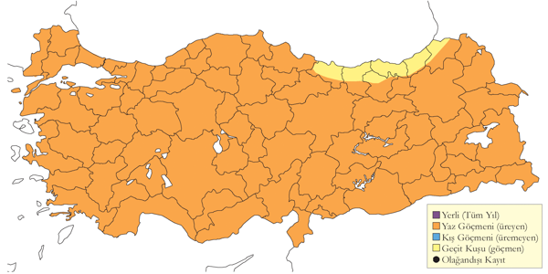
Üreme
Yuvalama alanı: Genellikle küçük ve orta boylu yerleşimlerde, bazen de yerleşim yakınlarındaki ağaçlıklar veya terkedilmiş çiftlik ve binalarda yuvalar. En yaygın bulunan yuva destek yapıları (NSS) düşük voltajlı elektrik direkleri (%41.5, n=4032), ağaçlar (%18.8, n=1827), çatılar (%10.7, n=1042), telefon direkleri (%7.7, n=746), bacalar (%5.8, n=566), camiler (%4.7, n=452) ve yüksek voltajlı elektrik direkleri (%3.5, n=340) oldu. Belirlenen yuva destek yapılarının %5.9’u (n=576) yapay yuva platformları üzerinde bulundu (Onmuş et al., 2016).
Yuvası: Yuvası, çatı, baca, telefon direği veya elektrik direğine kurulur. Yuvalaması için yerleştirilen platformları kullanır. En sık yuvaladığı ağaçlar kavak, söğüt, çam, zeytin ve ardıçdır. Balıkçıl kolonilerinde yuvaladığı da gözlenmiştir. Yuva, dal ve sopalardan yapılmış olup, çim ve toprakla sıvanmış, çukuru ise çöp, tüy ve çim ile kaplanmış sığ bir çukurdur. Uzun yıllar kullanılan yuvalar çok büyük hale gelebilir. Yuvaların alt kısmına serçe ve söğüt serçesi yerleşebilir, tek bir leylek yuvasında 50’ye yakın serçe yuvası sayılabilir.
Yumurta sayısı: Türkiye’de tek bir yuvada gözlenen en yüksek yumurta sayısı 5’tir. Gözlenen yavru sayısı 5 gözlemde 2, 7 gözlemde 3, 4 gözlemde 4, bir gözlemde ise 5 olmuştur. Üreme biyolojisi Batı ve İç Anadolu’da ayrıntılı olarak çalışılmıştır (Göcek et al., 2010).
Üreme dönemi: Yuvalama mart sonunda başlar, yumurtlama nisan ortasında olur ve yavruların çıkışı mayıs sonu ile haziran ayı arasında görülür. Büyümüş yavrular haziran sonu ve temmuz başında gözlenir. Üreme dönemi bazı bölgelerde ağustos başına kadar uzayabilir. MAR. Marmara ve Ege’deki bir çalışmada, köylerin içindeki yaklaşık 170 yuva tespit edilmiştir. Uluabat Gölü’nde 25 Nisan 2003’te kuluçkada gözlenmiş, büyümüş yavrular temmuz sonunda görülmüştür. KAR. Kızılırmak Deltası’nda 26 Temmuz 1971’de 22 yuvada 55 yavru sayılmıştır. 1975 yılında 3 Mayıs’ta kuluçkada ilk erişkin ve 7 Haziran’da ilk yavru gözlenmiştir. 1992’de yuvaların bir kısmı evlere yakın ağaçlara, bir kısmı da dağınık koloniler halinde korulara yerleşmiştir. İlk yavrular 21 Mayıs’ta görülmüş ve yumurtlama tarihinin 20 Nisan olduğu hesaplanmıştır (Hustings & Dijk, 1994). Daha sonra yapılan kapsamlı bir çalışmada Bafra Ovası’ndaki popülasyonun en az 900 çiftten oluştuğu belirlenmiştir. 12 Haziran 2004’te İspir yakınlarında elektrik direklerindeki yuvalarda yaklaşık 3-4 haftalık yavrular görülmüş, yumurtlama tarihinin 15-22 Nisan arasında olduğu düşünülmüştür. EGE. Milet’te 19 Mayıs 1970’te 30 yuvanın çoğunda küçük yavrular gözlenmiş ve yumurtlama tarihinin nisan ortası olduğu hesaplanmıştır. Söke yakınlarındaki bir köyde, 13 Mayıs 1899’da 50’den fazla yuvanın çoğunda yumurtalar, bazılarında küçük yavrular görülmüş ve yumurtlamanın 11 Nisan’da başladığı tahmin edilmiştir (Selous, 1900). AKD. 27 Mart 2000’de Ceyhan’da kuluçkaya yatan erişkinler tespit edilmiştir. Çukurova’daki yuvalarda, 7 Mayıs 1987’de kuluçkadaki kuşlar gözlenmiş, haziran sonu ve temmuz başında iri yavrulara rastlanmıştır. 1998’de Beyşehir Gölü Yeşildağ köyünde en az 21 yuva yapan çift, Dalyan’da ise çam ağaçlarındaki kolonide 10-19 çift gözlenmiştir (Kasparek, Bilgin & Akin, 1989). İÇA. Çayır veya bataklıklara yakın yerleşim yerlerini tercih eder (Parr et al., 1996). 1983-84’te Kızılcahamam’da kayalık bir yarda ve 1992’de Amasya ile Osmancık arasında bir kayada yuvalamıştır. Erişkinler 15 Mart ile 4 Ağustos arasında yuvada gözlenmiştir. 1993’te Eşmekaya’da 12 çift tespit edilmiştir (Parr et al., 1996). 14 Mayıs 2004’te bir erişkin küçük yavrusunu beslerken, yumurtlamanın nisan ortasında olduğu tahmin edilmiştir. 16 Temmuz 1986’da Kızılcahamam’daki bazı yuvalarda hala yavrular bulunmuş, bu durum yumurtlamanın nisan sonrası gerçekleştiğini göstermektedir. 1992’de Kızılcahamam’da budanmış bir ağaçta, yerden sadece 3 metre yüksekte bir yuva gözlenmiştir. 1 Haziran 1975’te İncesu’da tek bir iğde ağacında 18 yuva sayılmıştır. Çoğu yuva 5 metreden yüksektedir. GDA. 17 Mayıs 1989’da Birecik ile Cizre arasında beş yuvada yavrular görülmüş ve yumurtlamanın nisan ortasında başladığı düşünülmüştür. 1 Ağustos 1992’de Şanlıurfa ile Diyarbakır arasında bazı yuvalarda yavrular gözlenmiş ve yumurtlamanın mayıs başında başladığı hesaplanmıştır. DOA. Van Gölü yakınlarındaki bir yuvada ilk yavru 30 Mayıs 1969’da, son yavru ise 4 Ağustos 1974’te görülmüştür.
Alttürler ve Sınıflandırma
Türkiye’de nominat alttürü bulunur.
Sarı Gagalı Leylek
Mycteria ibis, Yellow-billed Stork, [Vinyet: Rastlantısal]
Rastlantısal konuktur.
Türkiye’de üç kez gözlemlenmiş bir Afrika göçmenidir. 7-20 Mayıs 1962’de Amik Gölü’nde (Kumerloeve, 1963), 28 Mayıs 1986’da Göksu Deltası’nda (Martins, 1989) ve 18-24 Haziran 2012’de Mogan Gölü’nde bir genç birey gözlenmiştir.
1996’dan önce İsrail’de 18 kayıt bulunmaktadır (Shirihai, 1996). Abu Simbel, Nasır Gölü ve Güney Mısır’da düzenli bir kış ziyaretçisidir (Goodman & Meininger, 1989). Bir genç birey, Ağustos-Eylül 1995’te Sharm el Sheikh’te fotoğraflanmıştır (Birding World 8: 292, 335). Haziran-Temmuz 2002’de Bulgaristan’da da gözlenmiştir (Ragyov et al., 2003).
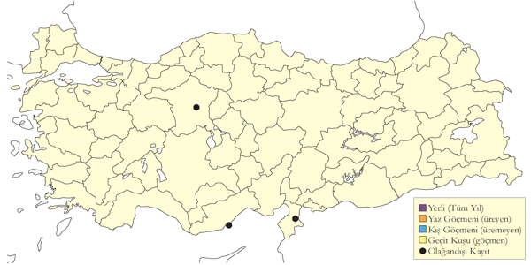
Üreme
Türkiye’de ürememektedir. Yayılış alanı Sahra altı Afrika’dır.
Alttürler ve Sınıflandırma
Monotipik bir türdür.
Sümsük
Morus bassanus, Northern Gannet, [Vinyet: Deniz]
Akdeniz kıyılarında az sayıda bulunan bir kış konuğudur.
Özellikle Doğu Akdeniz kıyılarında seyrek görülen, muhtemelen açık denizlerde daha yüksek sayılarda bulunan bir kış konuğudur. Gözlemlerin çoğu, sık gözlem yapılan Göksu Deltası ve Çukurova kıyılarından gelmektedir. Nadiren ve az sayıda ağustos ile kasım arasında, daha sık olarak aralık ve nisan ayları arasında gözlenir. Kaydedilen en kalabalık grup 10 kuşluktur. Bir kez aralık ayında Rize’de gözlenmiştir (Kirwan et al., 2003). Türkiye’deki ilk kayıt, 5 Mart 1965’te İskenderun Körfezi’nde ölü bulunan bir bireye aittir. Bu kuş, Temmuz 1964’te İskoçya’da Bass Kayalıkları’nda yavru iken halkalanmıştır (OST, 1969).
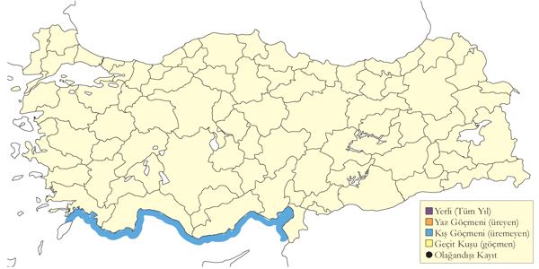
Üreme
Türkiye’de ürememektedir. Üreme dönemindeki yayılış alanı Kuzey Atlantik’tir.
Alttürler ve Sınıflandırma
Monotipik bir türdür. Geçmişte tüm sümsükler hep beraber Sula cinsi altında sınıflandırılmış, daha sonra Sümsük, Kap sümsüğü ve Avustralya sümsüğünün tropikal Sula sümsüklerinden farklı kemik yapısı ortaya çıkınca (Tets & Davidson, 1988), Morus cinsi altına alınmıştır (Sangster & Roselaar, 1997).
Kara Sümsük
Sula leucogaster, Brown Booby
Rastlantısal konuktur.
Bir kaydı bulunur. 1 birey Üsküdar Harem Otogarı’nda (İstanbul) 27 Nisan 24 tarihinde Andre Yarborough tarafından kaydedildi.
Üreme
Türkiye’de ürememektedir. Yayılış alanı tropikal denizlerdir.
Alttürler ve Sınıflandırma
Türkiye’de görülen birey Atlantik Okyanus’unda bulunan leucogaster alttürüne aittir.
Afrika Yılanboyunu
Anhinga rufa, African Darter, [Vinyet: Sulakalan]
Türkiye’de soyu tükenmiştir.
Türkiye’deki varlığı ilk kez (Tristram, 1882) ve (Chantre, 1883) tarafından Amik Gölü’nde toplanan örneklerle ortaya çıkmıştır. O dönemde, Amik Gölü ve Basra Bataklıkları kuşun Batı Paleartik’teki tek üreme alanıydı. 1910’da Ahoroni, Batı Avrupa’daki iki müze için 21 örnek toplamak üzere göle gelmiştir. 1933’e kadar birçok koleksiyoncu alanda detaylı gözlemler yapmış ve 1933’te Meinertzhagen kolonide 55 çift saymıştır.
1950’li yıllarda Türkiye popülasyonunun azalmaya başladığı anlaşılmıştır, bu durum İsrail’de kışlayan kuşların azalmasıyla eşzamanlıdır (Kumerloeve, 1966-67). 1956’da mekanize kurutma çalışmaları başlamış, 1960’ta gölden yalnızca 40-50 km² kalmış ve son kuş 9 Mayıs 1962’de belgelenmiştir (Kumerloeve, 1963). 1975’te göl tamamen kurutulmuştur. Avrupalı koleksiyoncuların yoğun avcılığıyla, kuşlar göl kurutulmadan önce, 1960’lı yıllarda zaten tükenme noktasına gelmiştir.
Bu kuşların büyük çoğunluğu İsrail’de, kuzeyde Hula Bataklıkları ve Ürdün Nehri Vadisi boyunca Yermük Nehri’nin ağzına kadar olan bölgede eylül ortasından nisan başına kadar kışlamaktaydı.
İsrail’de bu popülasyona ait son birey 1957’de gözlenmiştir (Shirihai, 1996). 31 Mayıs 2004’te Taberiya Gölü’nde (Celile Denizi) gözlenen birey (Ottens, 2006), son güncel kayıt olsa da Afrika’dan veya Irak’tan gelen bir konuk olarak değerlendirilmektedir.
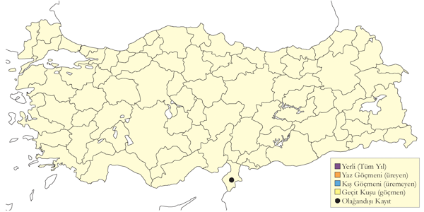
Üreme
Yuvalama alanı: İç göllerdeki çok geniş sazlıklarda, bazen saf, genellikle diğer balıkçıl ve kaşıkçılarla karışık koloniler halinde ağaçlara veya sazlara yuvalar.
Yuvası: Yuvasını çoğunlukla sazlardan yapar, yuva sudan en fazla 1,5 metre yükseklikte olur. Küçük karabatakla karışık kolonilerde birbirine çok yakın yuvalar kurar.
Yumurta sayısı: Genellikle 3-5 yumurta görülür.
Üreme dönemi: Yuvalama mart sonunda başlar ve haziran sonunda biter. AKD. 27 Mart’ta yuvalamanın başladığı ve haziran sonunda bittiği düşünülmüştür (Aharoni, 1930). Bu topluluktaki kuşların küçük bir kısmının yerli olduğu, Şubat 1948 ve 1950’de azami 50 kuşun kışladığı belirtilmiştir. Buna karşın Tristram, yerel halkla konuşarak yumurtaların hazirandan önce çıkmadığını, koloninin yavrular uçar uçmaz dağıldığını ve kuşların bir sonraki nisana kadar görülmediğini bildirmiştir. 26 Mayıs 1933’te incelenen birçok yuvada 3-5 yumurta ve çeşitli boylarda yavrular gözlenmiştir. Bu yavruların bazıları yumurtadan yeni çıkmış, bazıları ise küçük karga boyunda olup yuvadan suya atlayabilecek güçtedir (Meinertzhagen, 1935). Bu gelişmiş yavruların görüldüğü tarihe göre ilk yumurtaların nisan başında koyulduğu, yuvaların ise mart ayında yapıldığı söylenebilir.
Alttürler ve Sınıflandırma
Daha gri kanat üstü örtüler ve açık boyun önü ile ayrılan chantrei alttürü tanımlanmış (Oustalet, 1882) ve bu alttürün varlığı destek ve kabul görmüştür (Vaurie, 1965). Ardından güncel kaynaklar bu taksonu geçersiz (sinomim) saymıştır (Cramp & Simmons, 1977). İngiltere Tring Doğa Tarihi Müzesi’nde Irak’tan gelen ve Meinertzhagen tarafından toplanan Amik Gölü tahnitlerini iddianın geçersizliğini teyit eder. Türkiye ve Irak popülasyonunu Asya Yılanboyunu A. melanogaster olarak sınıflandırmış (Sibley & Monroe, 1990) olsa da, bunun tamamen bir yanlışlık olduğunu varsayabiliriz. Nitekim incelenen tahnitler bu kuşların (Afrika) Yılanboyunu A. rufa olduğuna şüphe bırakmaktadır.
Küçük Karabatak
Microcarbo pygmeus, Pygmy Cormorant, [Vinyet: Sulakalan]
Nispeten lokal olarak üreyen bir yerli tür, yaygın ve çok sayıda gözlenen bir geçit türü ve kış konuğudur.
Uluabat Gölü’nde 1998’de tespit edilen 823 çift, ülkedeki en önemli koloniyi oluşturur. Diğer önemli üreme alanlarından biri olan Karkamış Barajı’nda 6 Temmuz 2001’de 550 kuş sayılmıştır. Bu bölgede, kalabalık grupların düzenli olarak Fırat boyunca Birecik ile Suriye arasında gidip geldikleri gözlenmiştir. Çok yüksek sayılarının tespit edildiği Kızılırmak ve Yeşilırmak Deltalarında üreme henüz kanıtlanmamıştır. Batı bölgelerindeki bazı sulakalanda az sayıda üreyebilir. Bulanık Ovası’nda üredikleri uzun süre tahmin edilmiş ve nihayet ilkbahar 2002’de kanıtlanmıştır (Balmer & Kirwan, 2003). Bendimahi Deltası ve birkaç diğer alanda ürediği henüz kesinleşmemiştir. Çıldır Gölü’nde üreme döneminde ciddi sayılarda gözlenmeye başlamıştır. Iğdır’da, Aras boyunca ve sınırın ötesinde Ermenistan’da yüksek sayılarda bulunur.
Batı ve orta kesimlerdeki birçok küçük koloni son yıllarda küçülmüş ya da yok olmuştur. Geçmişte İç Anadolu’da önemli koloniler 150 çift ile Akşehir ve Eber gölleri, 600 çift ile Ereğli Sazlığı ve 200-250 çift ile Sultansazlığı’nda üremiştir. Hotamış Gölü’nde de üremekteydiler, ancak bu alan kurutulmuştur. 1990’larda Ereğli topluluğu sadece 20 çifte inmiş (Eken & Magnin, 1999) ve bugün tamamen yok olmuştur.
Sonbahar ve kış döneminde daha yaygın ve boldur. Azami 250 kuşluk küçük gruplar birçok alanda gözlenebilir. Önemli kışlama alanları ve azami sayıları şu şekildedir: Gediz Deltası’nda 1000 birey, Marmara Gölü’nde 300 birey, Meriç Deltası’nda 20.000 birey, Uluabat Gölü’nde 2000 birey ve Kızılırmak Deltası’nda 1000 birey sayılmıştır. İç Anadolu’da da kayda değer sayılarda kışlayabilir. Diğer üreme alanlarındaki sayılar, bu bölgelerdeki kuşlar veya dışarıdan gelen bireylerle artar.
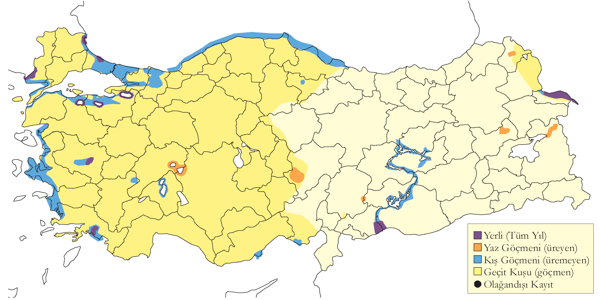
Üreme
Yuvalama alanı: İç göllerdeki çok geniş sazlıklarda, bazen saf, genellikle diğer balıkçıl ve kaşıkçılarla karışık koloniler halinde ağaçlara veya sazlara yuvalar.
Yuvası: Yuvalar, söğüt dallarından yapılmış sığ fincan şeklindedir. Uluabat Gölü’nde, çoğu yuva su seviyesinden azami 3 metre yukarıya kurulmuş, seyrek aralıklı söğüt gruplarında yer almıştır.
Yumurta sayısı: Türkiye’de gözlenen yuva sayısı çoğunlukla 4-6 yumurta arasında değişir.
Üreme dönemi: Üreme dönemi nisan ayında başlar, yavruların yumurtadan çıkışı mayıs ayı ortalarında görülür ve üreme süreci haziran başına kadar devam eder. MAR. Uluabat Gölü’ndeki koloni 1998’de ziyaret edilmiştir. Yuvaların çok geniş bir sazlığın ortasındaki seyrek söğüt gruplarında yer aldığı, çoğunun su seviyesinden azami 3 metre yukarıda kurulduğu tespit edilmiştir. 26 Nisan 2003’te büyük bir saz adasının ortasında, su basmış söğütlüklerde sudan 1,5-5 metre yüksekte yaklaşık 200 yuva bulunmuş ve üremenin yeni başladığı belirlenmiştir. 3 Haziran 2006’da 100 yuvada incelenen yavruların en küçüğünün 2 haftalık, çoğunun ise tamamen palazlanmış olduğu gözlenmiştir. 7 Haziran 1998’de hem tamamen palazlanmış yavrular hem küçük yavrular hem de yumurtalar tespit edilmiştir (Welch & Welch, 1998b). Manyas Gölü’nde 20 yuva incelenmiş, 2 Nisan 1967’de kuluçkaya yatan erişkinler ve 15 Mayıs’ta yavrular gözlenmiştir. EGE. Marmara Gölü’nde 30 Nisan 1951’de birçok yuvada yumurta gözlenmiş, ancak karışık kolonideki diğer türlerin yuvalarının boş olduğu belirlenmiştir (McNeile, 1950, 1951, 1954, 1967, 1968, 1970, 1972, 1973). Bafa Gölü’ndeki bir yuvada 13 Mayıs 1980’de üç yavru gözlenmiştir (Kasparek, 1988). AKD. Kurutulan Amik Gölü’nde 26 Mayıs 1933’te iki koloni bulunmuş, ölü sazlardan yapılmış yuvaların genellikle 4-6 yumurta içerdiği ve çoğunda en büyüğü bir haftalık olan yavrular olduğu tespit edilmiştir (Meinertzhagen, 1935). İÇA. Ereğli Sazlığı’nda 500-600 çiftin ürediği belirlenmiş, 16 Mayıs 1987’de incelenen yuvalarda sadece yumurtalar gözlenmiş, 18 Mayıs’ta ise bazı yuvalarda yavrular tespit edilmiştir. 25 Mayıs 1998’de karışık bir kolonide 20 yuvada yumurta tespit edilmiştir. Sultansazlığı’nda 1982’de yapılan incelemede, 13 Nisan’da yumurtalar görülmeye başlanmış, 28 Nisan’da üç yuvada dörder, dokuz yuvada beşer ve on yuvada altışar yumurta gözlenmiştir (Kasparek, 1985). Yarma Bataklığı’nda 9 Haziran 1971’de 15 çiftlik bir kolonide palazlanmış yavrular bulunmuştur.
Alttürler ve Sınıflandırma
Monotipik bir türdür. Küçük karabatak diğer üç küçük boylu karabatakla beraber Microcarbo cinsi altına alınmıştır (Siegel-Causey, 1988).
Karabatak
Phalacrocorax carbo, Great Cormorant, [Vinyet: Sulakalan] [Vinyet: Deniz]
Lokal olarak üreyen, yaygın ve çok sayıda bulunan bir yerli tür ve kış konuğudur.
Hem deniz kıyısında hem de tatlısu göllerinde bulunur. Büyük göller, baraj gölleri ve Karadeniz kıyısında yüksek sayılarda yuvalar. Manyas Gölü’nde, kısmen resmi koruma sayesinde, 1960’larda en fazla 544 çift üremişken, günümüzde en az 2650 çiftin ürediği bilinmektedir (Heath & Evans, 2000). Ayrıca, Sarıyar Baraj Gölü ve Manyas Gölü’ndeki popülasyonlarda da ciddi artışlar gözlenmiştir.
Demirköprü Barajı’nda 1966 yılında yaklaşık 300 çiftlik bir koloni üremiş ancak zamanla yok olmuştur. Karadeniz kıyısı boyunca birçok küçük koloninin bulunduğu bilinmektedir. İç Anadolu’da, geçmişte Akşehir Gölü, Beyşehir Gölü ve Ereğli Sazlığı’nda kayda değer sayılarda üreyen topluluklar ya tamamen yok olmuş ya da birkaç çifte kadar azalmıştır. Doğu Anadolu’da ise Van ve Hazar göllerinde geçmişte ürediği kaydedilmiştir.
Sonbahar ve kış döneminde çok daha yaygın olarak gözlenir. Küçükçekmece Gölü, İstanbul Boğazı ve Meriç Deltası’nda 10 bine yakın gruplar görülür. Ege Bölgesi’nde Marmara Gölü, Köyceğiz Gölü, Büyük Menderes Deltası ve İç Anadolu’da Sarıyar Barajı’nda binlerce birey gözlemlenebilir. Bu alanlarda, üremeyen bireylerin yazı geçirdiği de bilinmektedir.
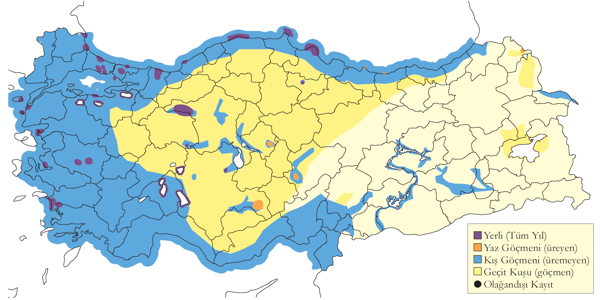
Üreme
Yuvalama alanı: Bazen saf koloniler oluştururken, Bafa Gölü’nde olduğu gibi gri balıkçıl veya küçük ak balıkçıl ile karışık koloniler de oluşturabilir. Daha kalabalık koloniler su basmış veya kuru zemindeki ağaçlara ya da iç göllerdeki adalara kurulur. Ayrıca deniz kenarındaki yamaçlarda, açıktaki adalarda ve hatta sazlıklarda yuvalar.
Yuvası: Ağaçtaki yuvası, dal parçalarından oluşan iri bir yapıdır ve otlar, yapraklar ve sucul bitkilerle astarlanır. Türkiye’deki deniz kıyısındaki yuvalar ve sazlıklardaki yuvalar henüz incelenmemiştir. Türkiye dışında, deniz kıyısındaki yuvalar başlıca yosunlar ve dal parçalarından, sazlıklardaki yuvalar ise başlıca sazlardan örülür. Kolonilerdeki kuş sayısı Trabzon kıyılarında 20 kuştan oluşurken, Manyas Gölü’nde 2000 çifti geçebilir.
Yumurta sayısı: Yumurta sayısı 1-5 arasında değişir, ortalama 3 yumurta gözlenmiştir.
Üreme dönemi: Üreme dönemi genel olarak şubat sonu ile temmuz arasında gerçekleşir. Yuva kurma şubat ve mart aylarında, yumurtlama mart sonu ile nisan ayında, yavruların çıkışı nisan sonu ile haziran başında olur. Yavruların palazlanması ve uçması ise haziran ve temmuz aylarında gerçekleşir. MAR. Manyas Gölü’nde 6 Nisan 1967’de çoğu yuvada yavrular, 26 Nisan 1970’te neredeyse palazlanmış yavrular gözlenmiştir. Bu gözlem yumurtlama tarihinin şubat sonu olduğunu gösterir. Manyas’taki koloninin Temmuz 1966’da hala aktif olması ve ilk yavruların 5 Haziran’dan önce görülmemesi, üreme faaliyetinin bazı yıllar uzatılabileceğini göstermektedir. Uluabat Gölü’ndeki karışık kolonide 3 Haziran 2006’da karabatak yuvalarında iri yavrular gözlenmiş, bu yuvaların diğer 6 türün yuvalarından daha yukarıda olduğu tespit edilmiştir. KAR. Perşembe’deki kolonide 2-14 Mayıs 1970 arasında 80-100 kuş sayılmış, 10 Haziran 1975’te 79 yuvada yavrular gözlenmiş, diğer deniz kenarındaki kolonilerde ise haziran ve temmuzda yavrular gözlenmiştir. EGE. Bafa Gölü’nde, 1 Mayıs 2003’te göl içindeki bir adada ağaçlarda bulunan koloni ziyaret edilmiş ve yaklaşık 200 yuva sayılmıştır. Yuvalar yerde 1-5 metre yükseklikte olup, yumurta sayısının 1-5 arasında değiştiği, ortalama 3 yumurta bulunduğu, yavru sayısının 3-5 arasında değiştiği ve ortalama 3 yavru bulunduğu gözlenmiştir. Yavruların çoğunun yumurtadan yeni çıktığı, en yaşlısının 1 haftalık olduğu göz önüne alındığında yumurtlamanın mart sonunda başladığı tahmin edilmiştir. Büyük Menderes Deltası Karina Lagünü’nde tek bir çift, 26 Mayıs 2004’te tepeli pelikan ve gri balıkçıl ile beraber yerde yuvalamıştır. İÇA. Ereğli Sazlığı’nda 8 Haziran 1971’de 13 yuvada palazlanmış yavrular gözlenmiştir.
Alttürler ve Sınıflandırma
Türkiye’de sinensis alttürü bulunur.
Tepeli Karabatak
Gulosus aristotelis, European Shag, [Vinyet: Deniz]
Lokal olarak üreyen, yaygın ve çok sayıda bulunan yerlidir.
Küçük kayalık adalarda, deniz mağaralarında ve deniz yarlarında Karabatak ve Gümüş Martı ile karışık kolonilerde ürer. Doğu Karadeniz kıyılarında bilindiğinden daha yaygın olabilir. Toplamda 12 alanda ürediği tespit edilmiştir. Şile Adaları’nda 175 çift, Ayvalık Adaları’nda 100-150 çift, Foça Adaları’nda 59 çift, Ildır Adaları’nda 84 çift ve Akkuş Adası’nda 90 çift bulunmaktadır (Eken, 1997c). Eken’in çalışmasında Türkiye popülasyonu 600-2500 çift olarak tahmin edilmiştir, bu da önceki 50-350 çiftlik tahminin (Kasparek & Bilgin, 1996) çok üzerindedir. Üreme dönemi dışında daha yaygındır ve yer yer kalabalık sürüler oluşturur. Aliağa’da 29 Aralık 2001’de 97, Kadıköy’de 1979-80 kışında 300’den fazla, 2003 sonbaharında ise İstanbul Riva açıklarında 600 kuşluk sürüler görülmüştür. İstanbul Haydarpaşa Mendirekleri’nde 2005 yılından itibaren yuvalamaya başlamıştır. Üreme sonrası dağılma çok geniş çaplı değildir. Daha önceki iddiaların aksine (Vielliard, 1968) içsu kaydı bulunmamaktadır.
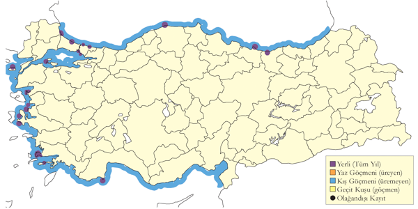
Üreme
Yuvalama alanı: Küçük, çıplak veya seyrek bitkili, genellikle kıyıya yakın adalarda, dolgu alanlarında veya deniz yarlarında yuvalar. Genellikle koloni halinde yuvalar.
Yuvası: Türkiye’deki yuva tarifi henüz yayımlanmamıştır. Türkiye dışında yuva, yosun ve bitki köklerinden oluşan bir yığın şeklindedir, ortası biraz çukur olup, kenarları daha ince maddelerle astarlanmıştır.
Yumurta sayısı: Türkiye’de tek gözlemden bilinen yumurta sayısı 3’tür. Diğer yerlerde yumurta sayısı 3-4 arasında olup, ara sıra 2-5 arasında değişir.
Üreme dönemi: Yuva kurma işlemi genellikle mart ayında başlar. Yumurtlama çoğunlukla mart ortası ile mayıs ayı arasında gerçekleşir. Yavrular mayıs sonu ve haziran aylarında uçmaya hazır hale gelir. MAR. Şile’de karadan 50 metre uzaktaki dört adanın ikisindeki 175 çift, kaya çatlaklarında veya çıplak yerlere yuvalamıştır (Magnin & Yarar, 1997). KAR. Sinop yakınlarındaki bir dolgu alanında 7 Haziran 1996’da 20 çift, Akkuş Adası’nda 90 çift yuvalamıştır. Bu adalar Ordu’nun batısında karaya 100 metreden yakın olup, kaya çatlaklarında yuva yapmışlardır. Perşembe yakınlarındaki bir kolonide, 10 Haziran 1975’te kuluçkada veya yeni çıkmış yavruların üzerine yatan iki erişkin ve 2-3 yavrunun olduğu bir yuva gözlenmiştir. AKD. Aydıncık Adaları’nda 1973 ve 1974’te yapılan çalışmalar sonucunda, 5 Mayıs 1973’te iki yavrulu bir yuva, 20 Mayıs 1973’te üç yavrulu yuva tespit edilmiştir (Witt, 1976). 1 Haziran 1974’te üç yuvada toplam altı yavru, başka bir yuvada üç yumurta sayılmıştır. 13 Nisan 1974’te ziyaret sırasında görülen 9 günlük yavrular, yumurtlamanın mart başında gerçekleştiğini göstermektedir. 1992-93 yıllarında küçük bir adada birkaç dağınık çift gözlenmiş, 13 Haziran 1992’de kayalık yarların altlarında yeni palazlanmış yavrular görülmüştür. Yumurtlama tarihi mart ortası olarak tahmin edilmiştir.
Alttürler ve Sınıflandırma
Türkiye’de desmarestii alttürü bulunur.
Ak Pelikan
Pelecanus onocrotalus, Great White Pelican, [Vinyet: Sulakalan]
Çok lokal olarak az sayıda üreyen bir yaz konuğu, nispeten yaygın ve çok sayıda bulunan bir geçit türü, az sayıda bulunan bir kış konuğudur.
Eskiden İç Anadolu’da kalabalık koloniler oluşturmuşsa da, günümüzde düzensiz aralıklarla az sayıda İç ve Doğu Anadolu’da yuvalamaktadır. Son zamanlarda düzenli ürediği tek alan, Gürcistan sınırındaki Aktaş Gölü’dür. Burada, ilk olarak Nihat Turan tarafından türü belirsiz pelikanların ürediği belirtilmiş (Türkiye Çevre Vakfı, 1993), ardından 1995’te tepeli pelikanlarla karışık bir kolonide 50 çiftin ürediği saptanmıştır (Magnin & Yarar, 1997). Yazın Çıldır Gölü’nde sıkça görülen sürülerin muhtemelen Aktaş Gölü’nden veya İran’daki üreme kolonilerinden geldiği düşünülmektedir. İkinci güncel koloni, 2012 yılında Amasya Yedikır Baraj Gölü’nde bulunmuş, en az 35 çiftin ürediği tespit edilmiştir. 1986 ile 1991 yılları arasında burada üreme kaydedilmemiştir. Göç rotası üzerindeki Eber Gölü’nde yazın binlercesi toplanır ve bu alanda üreme olasılığı yüksektir.
Kurutulana kadar, Amik Gölü’nde binlerce çift, Ereğli Sazlığı’nda 1968-71 yılları arasında 1500-2000 çift gözlenmiş, Mayıs 1970’te 2000 çift ve 8 Haziran 1971’de geniş bir sazlık içindeki bir adada 420 çiftlik bir koloni tespit edilmiştir. 1993’te 23 çift ve 1998’de ise yaklaşık 10 çift üremiştir. Karapınar Ovası’nda 1985’te 30-50 çift, Seyfe Gölü’nde 1992’de azami 80 çift, 1993’te 65 çift, Van Gölü’nde 1967’de 40 çift ve Tuz Gölü’nde 1998’de iki çift başarılı şekilde üremiştir. Seyfe Gölü ve Tuz Gölü’nde yuvalayan kuşların, günlük 50 km uçarak Hirfanlı Barajı’nda beslendikleri düşünülmektedir. Bu alanların dışında, Hotamış’ta 1971’de bir yumurta, Sultansazlığı’nda 1970’te küçük bir koloni bulunmuş, Yarma Bataklıkları, Akşehir ve Eber Gölleri’nde 1980’lerin sonunda ürediği düşünülmüştür. Ereğli Sazlığı’nda yüzlerce bireyden oluşan sürüler, 1973 ve 1992 yılları arasında yaz boyunca gözlenmiştir.
Avrupa ile Afrika arasındaki göçmen popülasyon dar bir göç koridorunu takip eder. Göç sırasında Meriç Deltası, Gala Gölü, Manyas Gölü, Kütahya Porsuk Barajı, Eber ve Akşehir Gölü, Ilgın Çavuşçu Gölü, Ereğli Sazlığı, Göksu Deltası ve Yumurtalık Lagünleri üzerinden geçer. Genellikle 300 kuştan az sürüler oluşturur, ancak Manyas Gölü’nde eylülde binlerce kuşluk sürüler sıkça gözlenir. Doğu Anadolu popülasyonu Bendimahi Deltası’ndan geçer. İlkbahar göçü mart ortasında başlar, yurt genelinde mayıs sonu, Doğu Anadolu’da ise haziran ortasına kadar devam eder. Ana kafileler nisan ayında geçişini tamamlar, daha sonra gelenler ise üremeyen ve genç kuşlardır. Kapıdağ Yarımadası’nda yapılan bir ilkbahar sayımında, 15 Mart ile 18 Mayıs arasında tek noktadan 39.734 kuş sayılmıştır (Tuncalı 2010). Sonbahar göçü temmuz ortasında başlar ve kasım sonuna kadar devam eder. Yumurtalık Lagünleri, İskenderun Körfezi ve Belen Geçidi’nde yoğun geçişler eylül sonu ile ekim ortasında gözlenmiştir. Belen Geçidi’nde yapılan kapsamlı bir çalışmada, 2 Ağustos ile 23 Eylül 1976 arasında toplam 8000 kuş sayılmıştır (Sutherland & Brooks, 1981).
Kışın nadirdir, ara sıra batı ve orta bölgelerde, genellikle kıyısal sulakalanlarda kaydedilir. En yüksek kış sayımı Ocak 1974 ve Aralık 1975’te Göksu Deltası’nda 14 birey, Ocak 1995’te ise 16 bireydir. İç bölgelerden altı kışlama kaydı bulunmaktadır.
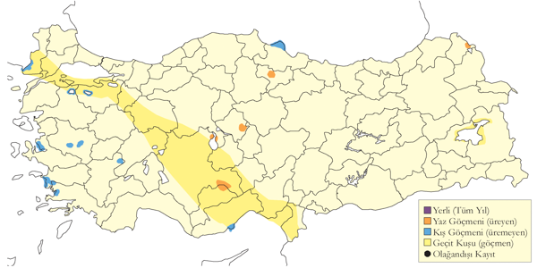
Üreme
Yuvalama alanı: Üreme hakkındaki bilgiler Seyfe Gölü, Ereğli Sazlığı ve Aktaş Gölü’nden gelir. Bu üç göl birbirinden çok farklıdır: Seyfe Gölü büyük, sığ ve acı bir göl; Ereğli Sazlığı, kurutulmadan önce sığ bataklıklar, sazlıklar ve tatlı su göllerinin bulunduğu çok geniş bir kompleks; Aktaş Gölü ise 1800 metre rakımda sığ bir göldür.
Yuvası: Seyfe Gölü’nde yuvalar, eski flamingo yuvalarının üzerine kurulmuş ve ince saz gövdeleri, otlar ve sucul bitkilerden oluşmuştur. Ereğli Sazlığı’nda yuvalar, Phragmites gövdelerinden yapılmış ve sudan yaklaşık 40 cm yükseklikte bir adanın üstünde yer almıştır.
Yumurta sayısı: Seyfe Gölü’nde 13 Mayıs 1993’te incelenen yaklaşık 50 yuvanın çoğunda iki, bazılarında tek yumurta ve birinde üç yumurta tespit edilmiştir. Ereğli Sazlığı’nda gözlenen yuvaların çoğunda iki yumurta bulunmuştur.
Üreme dönemi: Üreme dönemi mayıs başında başlayıp haziran ortasına kadar devam eder. Yumurtlama nisan ayında başlar ve yavrular haziran ayında çıkmaya başlar, bazı bölgelerde ağustosa kadar süren yavru gelişimleri gözlenmiştir. İÇA. Seyfe Gölü’nde 18 Haziran 1992’de bu kolonide 55 yavru (Kirwan, 1992b) 26 Haziran 1992 ise 155 yavru sayılmıştır (Magnin & Yarar, 1994). 1993’te 70-80 çiftlik bir koloni çamur adasında üremiş, yuvalar saz gövdeleri ve sucul bitkilerden yapılmıştır. 13 Mayıs’ta iki, bazılarında tek, birinde üç yumurta görülmüş, 28 Mayıs’ta 65 yuvada yumurtalar ve azami 14 günlük yavrular gözlenmiştir. 14 Haziran’da yavrular 15-31 günlükken iki yuvada yeni yumurtalar bulunmuş, bu yuvalar telafi denemesi olarak yorumlanmıştır (Magnin & Yarar, 1994). Ereğli Sazlığı’nda en erken yumurtlama 18 Nisan’da gerçekleşmiş, 16 ve 17 Haziran 1993’te 250 erişkin ve 23 yuva tespit edilmiştir (Magnin & Yarar, 1994). DOA. Van Gölü’ndeki üç adada, 1967’nin Ağustos ortasında yaşları farklı olan, bazıları küçük, bazıları uçmaya hazır 85 yavru sayılmıştır (Vielliard, 1968).
Alttürler ve Sınıflandırma
Monotipik bir türdür.
Küçük Pelikan
Pelecanus rufescens, Pink-backed Pelican, [Vinyet: Rastlantısal]
Rastlantısal konuktur.
İki genç birey, 11 Mayıs 2011’de Göksu Deltası’nda bir leylek sürüsü içinde fotoğraflanmıştır. Bu tür, İsrail’de 1939 ile 1989 yılları arasında 5 kez kaydedilmiştir. Mısır-Sudan sınırındaki Nasır Gölü’nde ise düzenli olarak gözlenir.
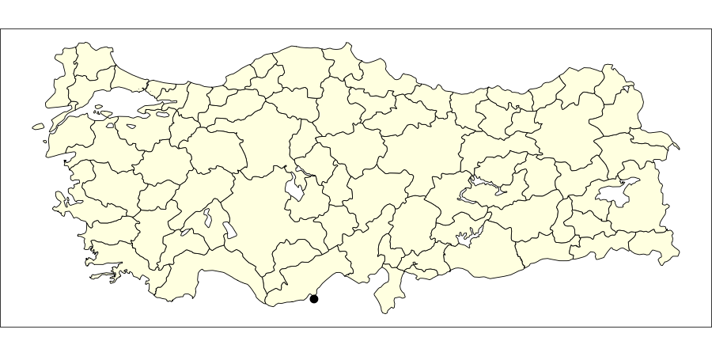
Üreme
Türkiye’de ürememektedir. Yayılış alanı Sahra Altı Afrika’dır.
Alttürler ve Sınıflandırma
Monotipik bir türdür.
Tepeli Pelikan
Pelecanus crispus, Dalmatian Pelican, [Vinyet: Sulakalan] [Vinyet: VU (2016)]
Lokal olarak nispeten az sayıda üreyen yerli türdür. Kışın göç alır, sayıları artar ve daha geniş yayılış gösterir.
Ülkemizdeki dört sulakalanda düzenli olarak ürer. Manyas Gölü’nde 1975’te 60 çift, 1990’da 20 çift ve 2010’da 130 çift; Gediz Deltası’nda 1982’de 10 çift ve 2010’da 104 çift; Büyük Menderes Deltası’nda 1980’de 16 çift, 1990’da 42 çift ve 2010’da 56 çift; Aktaş Gölü’nde ise 1995’te 20 çift ve 2003’te 45 çift üremiştir. Işıklı Gölü’nde 2010 yılında 6 çiftin ürediği kaydedilmiş (Onmuş et al., 2011) ve Kızılırmak Deltası’nda da az sayıda düzensiz olarak ürediği bilinmektedir. Son 20 yılda üreyen çift sayısında ciddi bir artış gözlenmiştir. Üremeyen bireyler Marmara, Ege, Akdeniz ve İç Anadolu’daki bazı sulakalanlarda konaklar. Doğu Anadolu’da Aktaş Gölü’ndeki üreme kolonisi Çıldır Gölü’ne düzenli olarak gider.
Geçmiş kayıtlara göre 25 sulakalanda ürediği görülmüştür; bunların 17’sinde kesin, 4’ünde kuvvetle olası ve 4’ünde olasıdır. 1960’lardan itibaren sulakalanlarda yaşanan sorunlar nedeniyle birçok alanda kaybolmuştur (Onmuş et al., 2011). Kızılırmak Deltası’nda 1970-1973 yıllarında 60-70 çift, Marmara Gölü’nde 30-50 çift, Ereğli Sazlığı’nda 1968-71 yıllarında 20-25 çift ve Beyşehir Gölü’nde 1964 yılında 83 çiftin ürediği kaydedilmiştir. Konya Yarma Bataklıkları’nda 1970’lerde 10 terkedilmiş yuva bulunmuş, Hazar Gölü’nde ise üreme kaydedilmiştir. Ayrıca Akşehir Gölü’nde 1992’de 3-5 çift ve Hotamış Gölü’nde bir çiftin ürediği muhtemeldir. Ağyatan Gölü’nde 1950’li yıllarda üremiş olabilir. Amik Gölü’nde Haziran 1966’da 1000 ak pelikanın arasında görülen 50-100 tepeli pelikanın bölgede ürediği düşünülmektedir. Meinertzhagen 1933’te, Aharoni ise 1910’da üreme olasılığını bildirmiştir.
Kışın batı ve orta kesimlerde yaygın olup, kışlayan popülasyonun büyük kısmı kıyısal sulakalanlarda yoğunlaşır (Crivelli et al., 1991). Kışlayan popülasyon, 1970 ile 2000 yılları arasında artmıştır (Sarıgül, 2001). Kışlayan tepeli pelikanlar, Yunanistan ve Romanya popülasyonlarından göç almaktadır. Toplam kışlayan nüfus yaklaşık 2500 bireye ulaşmıştır (Onmuş et al., 2011). Ana kışlama alanları Bafa Gölü, Büyük Menderes Deltası, Gediz Deltası, Marmara Gölü, Manyas Gölü ve Ulubat Gölü’dür. Bu alanlarda her yıl 200 ila 600 kuş kışlar. Diğer sulakalanlarda ise 20-50 birey sayılabilir. Eskiden Kızılırmak Deltası’nda 90, Göksu Deltası’nda ise 375 birey sayılmıştır.
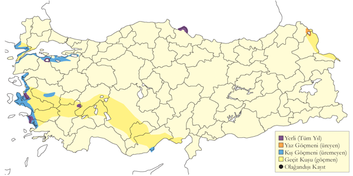
Üreme
Yuvalama alanı: Üreme bilgileri yedi alandan gelmektedir. Çoğunlukla 5 ila 50 çiftten oluşan kolonilerde ürer. İncelenen üç koloni kıyısal sulakalanlarda, dört koloni iç sularda ve bataklıklarda bulunmaktadır.
Yuvası: Yuvalar, kıyısal sulakalanlarda çıplak ve alçak adalarda zemine, göllerde çamur adalarına veya yüzen saz kümelerine, sazlıklarda ise bodur ağaçlara kurulur. Manyas Gölü’nde tür için özel yapılmış yuva platformlarını kullanır. Sazlıklardaki yuvalar, genellikle ölü sazlardan oluşan büyük platformlar olup ortası hafif çukurdur (McNeile, 1950, 1951, 1954, 1967, 1968, 1970, 1972, 1973).
Yumurta sayısı: Türkiye’de bilinen yumurta sayısı 1-3 arasında değişir, çoğunlukla 2’dir.
Üreme dönemi: Üreme dönemi genellikle mart ayında başlar, yumurtlama nisan ve mayıs aylarında yoğunlaşır. Yavrular haziran başından itibaren çıkmaya başlar ve temmuz ayına kadar palazlanarak uçmaya hazır hale gelirler. Bazı bölgelerde başarısız üreme denemelerinin telafisi olarak üreme süreci ağustos ayına kadar uzayabilir. MAR. Manyas Gölü’nde 1966’da iki kolonide 13 yuva sayılmış, beşinin tek bir ağaçta olduğu saptanmıştır. 29 Nisan’da erişkinlerin kuluçkada olduğu gözlenmiştir. 15 Mayıs 1969’da 25 çiftin yeni kurulan platformlarda ürediği, 26 Nisan 1970’te ise platformda 30 çift sayıldığı kaydedilmiştir. Kuluçkaya yatışın 6 Nisan 1970’te başladığı, 29 Haziran’da besili yavruların görüldüğü tespit edilmiştir. 22 Ağustos 1980’de bir erişkin ve yanındaki iki yavru, büyük olasılıkla başarısız bir üreme denemesinin telafisi olarak gözlenmiştir. 3 Haziran 1991’de alanda 51 erişkin ve 47 yüzen yavru sayılmıştır. 20 Nisan 1996’da beş çiftin yanında 2-3 haftalık yavrular gözlenmiş, yumurtlama döneminin mart başında olduğu hesaplanmıştır. KAR. Kızılırmak Deltası’nda 1992’de bulunan koloni, çok geniş bir sazlığın ortasındaki 40 metrekarelik bir çamur adasında yer almıştır. 18 Mart’ta bir erişkin yuva malzemesi taşırken gözlenmiş, 5 Nisan’da altı yuvada toplam 7 yumurta, 10 Mayıs’ta altı yumurta ve 2-3 haftalık 4 yavru görülmüş, yumurtlamanın 20-30 Mart’ta başladığı hesaplanmıştır (Hustings & Dijk, 1994). 1966’da 25 çiftin ürediği düşünülmüş, 6 Ağustos 1971’de delta’daki iki mevkide 12 erişkin ve 33 palazlanmamış yavru sayılmıştır (Dijksen & Kasparek, 1985). 7 Temmuz 1972’de yaklaşık 4 haftalık 34 yavru görülmüş, 1984’te 30-50 çiftin ürediği tahmin edilmiştir. EGE. Gediz Deltası’nda 1995’te üç küçük kolonide 35 çift üremiş, üreme faaliyeti 15 Ocak ile 15 Nisan arasında gerçekleşmiştir. Çift başına üreme başarısı 0,83 yavru olmuştur. 1996’da 31 çift yuvalamış, koloninin oluşmasının ilk işaretleri mart sonunda gözlenmiştir (Eken, 1997a). 30 Nisan 1995’te on erişkinin yuva üzerinde oturduğu gözlenmiştir. Gediz Deltası ve Büyük Menderes Deltası’nda vejetasyonsuz adalarda yuvalarını düz zemin üzerine kurmuşlardır. Genellikle balıkçıların dalyancılık için kullandığı ve dalgalarla adaya vuran kesilmiş saz, kargı veya ince dallardan yapılmıştır. Yuvalar üreme dönemi boyunca biriken dışkılarla sağlamlaştırılmıştır. Yuvanın ortası sığ bir çukur olup, kenarları otlar, teller ve tüylerle astarlanmıştır. Her adada genellikle 10-12 çift yuva yapar, ancak bazı adalarda tek bir yuva da bulunabilir. Grup içindeki daha büyük yuvalar, ortada yerden azami 80 cm yükseklikte, daha küçük yuvalar ise kitlenin kenarında ortalama 30 cm yükseklikte bulunur. Büyük Menderes Deltası Karina Dalyanı’nda 23 Nisan 2003’te 60-80 çift gözlemlenmiş, en az 20 yuvada iki yumurta, birkaçında tek yumurta ve birinde üç yumurta bulunmuştur. Toplam 30-40 yavrunun bir kısmı 5 haftalık, bir kısmı ise yumurtadan yeni çıkmış olarak kaydedilmiştir. Bazı yuvalarda ise yeni konmuş yumurtalar görülmüştür. Yumurtalar beyaz olup, zaman içinde sararmıştır. 3 Mayıs 2001’de bazı yavrular yeni çıkmış, bazıları ise 5-6 haftalık olup, toplam 6 yuvada hala yumurtaların olduğu kaydedilmiştir. 3 Haziran 1991’de 56 erişkin ve 38 iri yavru gözlenmiştir. Bu kayıtlar, bazı erişkinlerin nisan sonunda yumurtladığını göstermektedir. Marmara Gölü’nde sık bir sazlıkta yüksek sayılarda üremiştir. 13 Mayıs 1950’de sazların arasındaki dar bir su yolunda “37 metre boyunca peşi sıra dizilmiş yuvalar” tespit edilmiştir. Bu yuvaların bazılarında yumurtalar, yeni çıkmış yavrular ve yumurtadan çıkmak üzere olan yavrular gözlenmiştir (McNeile, 1950, 1951, 1954, 1967, 1968, 1970, 1972, 1973). İÇA. Ereğli Sazlığı’nda düzensiz üreme faaliyetleri kaydedilmiştir. 8 Haziran 1971’de 50 çiftin yanı sıra 7-8 tanesinin iri yavruları gözlenmiştir. 1987’de üç çift yuvalamış, 20 Nisan 1988’de yuva malzemesi taşıyan iki erişkin gözlenmiştir. 13 Haziran 1991’de 19 erişkin ve bir kum adası üzerindeki yuvada iki yavru kaydedilmiştir.
Alttürler ve Sınıflandırma
Monotipik bir türdür.
Balaban
Botaurus stellaris, Eurasian Bittern, [Vinyet: Sulakalan]
Lokal olarak ve az sayıda ürer. Aynı zamanda yaygın ve nispeten az sayıda bulunan bir geçit türü ve kış konuğudur.
Kızılırmak Deltası’nda 240 çifte yakın bir popülasyonun ürediği belirlenmiştir (Hustings & Dijk, 1994). Yeşilırmak Deltası’ndaki geriye kalan bataklık alanlarda da bolca bulunduğu bilinir. Bu iki alan dışında, az sayıda alanda ürediği düşünülmektedir (Kasparek, 1986). İç Anadolu’daki çeşitli sulakalanlarda yaz aylarında düzenli olarak görülse de, geniş alanlara ihtiyaç duyan bu türün üremesi pek olası değildir. Türkiye popülasyonu, daha önce tahmin edilenden daha yüksek olup, Avrupa ve dünya çapında öneme sahiptir.
Geçit döneminde ve kışın batı ve orta kesimlerde az sayıda rastlanır. Soğuk geçen kış aylarında bile İç Anadolu’da kışlayabilir. Üreme alanlarında sayıları, göç yoluyla gelen bireylerle artış gösterir.
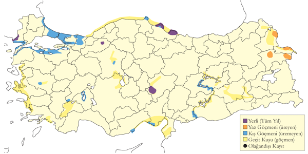
Üreme
Yuvalama alanı: Geniş sazlık alanlarda yuvalar.
Yuvası: Türkiye dışında, su seviyesindeki yuvasını sığ suda toprak tabana oturtur. Alçak yuvası, saz ve diğer sucul bitki yığınlarından oluşur ve ince malzemeyle astarlanır.
Yumurta sayısı: Ortalama yumurta sayısı 4-6 arasındadır.
Üreme dönemi: Nisan ve haziran ayları arasında seslenen erkekler üreme ihtimalini gösterir. KAR. 7 Nisan 2005’te Kızılırmak Deltası’nda geniş bir alanda yuva malzemesi taşıyan bir erişkin gözlenmiştir. DOA. Hafik Gölü’nde 22 Mayıs 2005’te içinde uçmaya hazır 3 yavru bulunmuştur.
Alttürler ve Sınıflandırma
Türkiye’de nominat alttürü bulunur.
Küçük Balaban
Ixobrychus minutus, Little Bittern, [Vinyet: Sulakalan]
Yaygın olarak ve çok sayıda bulunan bir yaz konuğu ve geçit türüdür.
Bataklık sulakalanlarda ürer, hatta çok küçük alanları bile kullanabilir. Büyük sulakalanlarda ciddi sayılarda bulunur. Meriç Deltası’nda 200 çift, Uluabat Gölü’nde 150 çift üremektedir. Kızılırmak Deltası’nda 15-30 çift tespit edilmiştir (Hustings & Dijk, 1994). 1980’lerde Sultansazlığı’nda 300 çiftin ürediği kaydedilmiştir (Kasparek, 1985).
Mart sonu itibariyle az sayıda birey görülmeye başlar. Ana göç dalgası mayısın ilk yarısında gerçekleşir ve mayıs sonuna kadar devam eder, bu sırada 2100 metre irtifaya kadar çıkar. İç bölgelerdeki varış tarihi, kıyısal alanlara göre 10-14 gün gecikir. Dönüşü ağustos ortasında başlar, eylül ortasında zirve yapar ve ekim boyunca devam eder. İstisnai olarak kasım ayında da görülebilir.
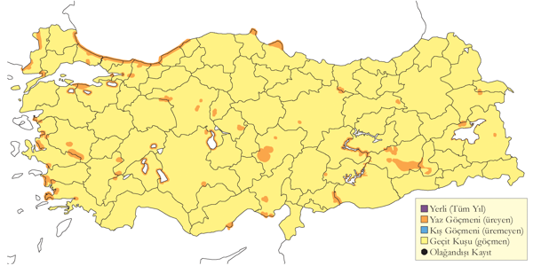
Üreme
Yuvalama alanı: Sazlıklar, kenarı sazlık kanallar, nehirlerin menderesleri ve göllerde ürer.
Yuvası: Tek başına yuvalar, ancak verimli alanlarda birkaç çift birbirine yakın olarak serbest bir birliktelikte yaşayabilir. Başka ülkelerde alçak bir çalı veya ağaçta yuvaladığı da kaydedilmiştir.
Yumurta sayısı: Türkiye’de gözlenen yumurta sayısı genellikle 5 veya 6, nadiren 4-10’dur.
Üreme dönemi: Üreme dönemi genellikle nisan ayında başlar, yumurtlama mayıs ayı boyunca devam eder. Yavrular haziran ayında çıkmaya başlar ve temmuz ayına kadar palazlanarak uçmaya hazır hale gelirler. MAR. Uluabat Gölü’nde 1998’de sık bir sazlıkta 122 alan savunan erkek gözlenmiştir (Welch & Welch, 1998b). KAR. Kızılırmak Deltası’nda 10 Haziran 1992’de geniş bir sazlıkta erguvani balıkçıl kolonisinin yakında, sudan 10-20 cm yükseklikte bir yuva bulunmuş ve içinde üç yumurta gözlenmiştir (Hustings & Dijk, 1994). AKD. Antakya’da 8 Mayıs 1962’de yuva yapımı gözlenmiştir. İÇA. Mogan Gölü’nde Temmuz 1968 sonunda genç kuşlar görülmüştür.
Alttürler ve Sınıflandırma
Türkiye’de nominat alttürü bulunur.
Gece Balıkçılı
Nycticorax nycticorax, Black-crowned Night Heron, [Vinyet: Sulakalan]
Yaygın ve nispeten çok sayıda bulunan bir yaz konuğu, yaygın ve bol miktarda rastlanan bir geçit türü, lokal olarak düzensiz ve az sayıda bulunan bir kış konuğudur.
Tüm bölgelerde en az 10 sulakalanda ürediği bilinmektedir. Manyas Gölü’nde 1967’de 500 çift, 1990’larda ise 150 çift üremiştir. Meriç Deltası’nda 200 çift, İznik Gölü’nde 250 çift, Göksu Deltası’nda 150 çiftin ürediği kaydedilmiştir. Ayrıca Yeşilırmak Deltası’nda 9 çiftin ürediği tespit edilmiştir. Son yıllarda, İç Anadolu’daki bazı üreme kolonilerinin ortadan kalktığı belirlenmiştir (Eken & Magnin, 1999).
Geçit döneminde daha bol ve yaygın olarak gözlenir. İlkbahar geçişi mart başından mayıs ortasına kadar sürer, sonbahar geçişi ise ağustos ortasından ekim sonuna kadar devam eder ve eylül ayında zirve yapar. Temmuz ortasında genç kuşların dağılmaya başladığı görülür.
Kışın düzensiz aralıklarla kaydedilir. Önemli kışlama kayıtları şöyledir: 3 Ocak 1999’da Iğdır Ovası’nda 113 birey (DHKD, 1999), 3 Şubat 2002’de Manyas Gölü’nde 83 birey (Demirci, 2002) ve 20 Ocak 1997’de Yeşilırmak Deltası’nda 31 birey (Welch & Welch, 1998a) gözlenmiştir. Karakaya Barajı’nda üreyen koloninin kışın alanda kaldığı ve kışlayan en kalabalık topluluğu oluşturduğu düşünülmektedir. Ocak 2005 ve Ocak 2006’da en az 210 kuş sayılmıştır.
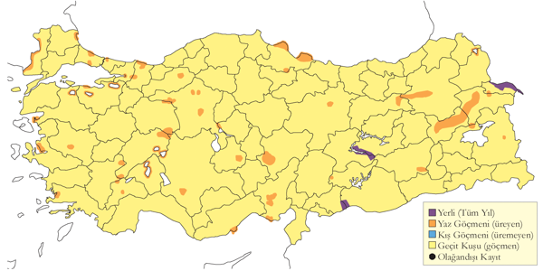
Üreme
Yuvalama alanı: Çoğunlukla diğer su kuşlarıyla beraber büyük içsu göllerinde, nehir deltalarında ve nehir boylarında ürer. Kolonideki yuva sayısı 500’e kadar çıkabilir, nadiren tek başına yuvalar. Büyük koloniler sıkça kavaklarda, küçük koloniler ise sazlıklarda bulunur.
Yuvası: Yuva basık bir yapıdır. Ağaçtaki yuvalar dallardan, sazlıklardaki yuvalar ise saz gövdelerinden oluşur.
Yumurta sayısı: Türkiye’de gözlenen yumurta sayısı 3 veya 4, nadiren 5’tir.
Üreme dönemi: Üreme döneminde yumurtlama genellikle nisan ayı ortasında başlar, yavrular haziran ayında çıkmaya başlar ve temmuz ayına kadar palazlanarak uçmaya hazır hale gelirler. MAR. Manyas Gölü’nde 1967’de 500 çift balıkçı, kaşıkçı ve karabataklarla beraber yuvalamıştır. 5 Nisan 1967’de subasar bir söğütlükteki kolonide yuva başında erişkinler gözlenmiş, fotoğraflarına göre (Pforr & Limbrunner, 1982) Mayıs 1971’de içinde 2-3 haftalık üç yavru, 30 Haziran 1970’te 1-2 haftalık iki yavru görülmüş, yumurtlama tarihinin mayıs sonu olduğu hesaplanmıştır. Uluabat Gölü’nde 1998 yılında bir sazlığın ortasında seyrek dağılmış söğüt kümelerinde 6 türün bulunduğu karışık bir kolonide 105 yuva sayılmış, 7 Haziran 1998’de çoğu yuvada yumurta, bazılarında ise palazlanmaya yakın yavrular tespit edilmiş (Welch & Welch, 1998b), yumurtlama tarihinin nisan ortasında olduğu hesaplanmıştır. 3 Haziran 2006’da aynı kolonide 7 türün karışık ürediği tespit edilmiş, bunların arasında farklı yaşlardan yavrulu ve 3-5 yumurtalı yaklaşık 40 yuva sayılmıştır. EGE. Bilinmeyen bir sazlıkta çeltikçi, alaca balıkçıl, küçük ak balıkçıl, büyük ak balıkçıl ve küçük karabatak ile beraber yuvalayan kalabalık bir koloni bulunmuş, 13 Mayıs 1899’da gece balıkçılı yuvalarının sudan biraz yüksekte bulunduğu, çoğunun boş, bazılarının 1 veya 2 yumurtalı olduğunu gözlenmiştir (Selous, 1900). İÇA. Ereğli Sazlığı’nda 25 Mayıs 1998’de 20 çiftin, 20 çift küçük karabatak, birkaç çift büyük ak balıkçıl ve gri balıkçıl ile beraber yuvaladığı tespit edilmiş, çoğu yuvada 3-4 yumurta, bazılarında ise yumurtadan yeni çıkmış yavrular görülmüş, yumurtlama tarihinin nisan sonunda olduğu tahmin edilmiştir. Ankara yakınlarında, tahminen Nallıhan Kuş Cenneti’nde, 7 Mayıs 1981’de 50 çiftin gri balıkçıllarla beraber yuvaladığı görülmüştür. Burada küçük ak balıkçıl, karabatak ve gri balıkçılla beraber yuvaladığı bilinir. Eber Gölü’nde Haziran 1994’de sonunda ve Konya yakınlarında 4 Temmuz 1986’da palazlanmış yavrular görülmüştür. Bu kayıtlar yumurtlama tarihinin en genç nisan sonunda olduğunu gösterir. DOA. Temmuz 1970’de Erzurum Pasinler’deki tek bir çift yaklaşık 100 yuvalı bir ekin kargası kolonisinde yuvalamıştır (OST, 1972, 1975). Ahtamar Adası’nda 3 Haziran 1972’de yaklaşık 20 çiftlik kolonideki on yuvada 1-4 yavru sayılmış, 8 Ağustos 1974’de palazlanmış yavrular gözlenmiştir. 1969’da Ağrı yakınlarındaki söğütler üzerinde iki küçük kolonide toplam 12 çiftin yuvaladığı görülmüştür.
Alttürler ve Sınıflandırma
Türkiye’de nominat alttürü bulunur.
Küçük Ak Balıkçıl
Egretta garzetta, Little Egret, [Vinyet: Sulakalan]
Lokal olarak çok sayıda bulunan bir yerli veya yarı göçmen, yaygın ve çok sayıda bulunan bir geçit türü ve kış konuğudur.
Özellikle büyük içsu gölleri ve kıyısal nehir deltalarında ürer. Meriç Deltası’nda 470 çift üremektedir. Kızılırmak Deltası’nda ise en az 230 çiftin ürediği düşünülmektedir. İç Anadolu’da son yıllarda bazı alanlarda sayıları azalmış, buna karşılık bazı kıyı bölgelerinde artışlar olduğu düşünülmüştür.
İlkbahar geçişi mart ortası ile mayıs sonu arasında gerçekleşir, nisan ortası ile mayıs başı arasında yoğunlaşır. Sonbahar geçişi ise temmuz sonu ile eylül sonu arasında gözlenir. Bu dönemde, Doğu Karadeniz ve Trakya’da yüksek sayılarda görülebilir.
Orta sayılarda, ağırlıklı olarak Ege ve Akdeniz bölgelerinde kışlar. Marmara ve Karadeniz bölgelerinde ise kışın daha seyrek gözlenir. Ilıman kışlarda İç Anadolu’daki sulakalanlarda az ve orta sayılarda kalabilir. 3 Mayıs 1997’de Mogan Gölü’nde fotoğraflanan koyu renkli birey, Türkiye’deki ilk kaydıdır (Boyla & Eken, 1998).
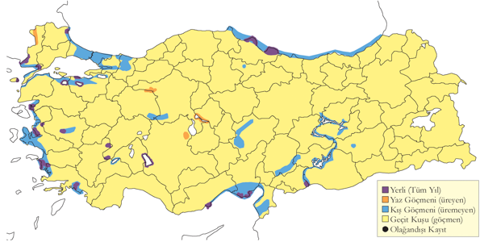
Üreme
Yuvalama alanı: Çok sık ve karışık kolonilerde, genellikle 30 ila 200 çift olarak bulunur. Yuvalar, bir ağaç veya çalıya kurulur ve yuvalama ağaçları subasar alanlarda yer alabilir.
Yuvası: Ağaç veya çalıdaki yuvalar ince dallardan, aksi takdirde sazlardan oluşan sığ bir yapıdır.
Yumurta sayısı: Türkiye’de gözlenen yumurta sayısı 4-6 arasındadır.
Üreme dönemi: Üreme dönemi genellikle nisan sonunda başlar ve yumurtlama mayıs ayı boyunca devam eder. Yavrular haziran ayında yumurtadan çıkar ve temmuz ayına kadar palazlanıp uçmaya hazır hale gelir. MAR. Uluabat Gölü’nde 7 Haziran 1998’de geniş bir sazlığın ortasındaki söğüt kümeleri içindeki karışık bir kolonide 76 yuva sayılmış, yavruların çoğunun uçmaya hazır olduğu, ancak içinde yumurta olan yuvaların da bulunduğu tespit edilmiştir (Welch & Welch, 1998b). Buna göre en erken yumurtlama tarihinin nisan sonu olduğu, içinde yumurta olan yuvaların ise başarısız ilk denemenin ardından telafi çabası olduğu düşünülmüştür. Manyas Gölü’nde yaşlı bir söğütte yaklaşık 6 metre yukarıda iki yuva görülmüş, bu yuvalarda 2 Mayıs 1966’da dört ve beş yumurta sayılmıştır. Ertesi yıl, 29 Mart 1967’de erişkinlerin yuvaya döndükleri ve 12 Nisan’da yuvayı tekrar kullanmak için tamir ettikleri gözlenmiştir. EGE. Bafa Gölü’ndeki bir adada yaklaşık 100 çift karabatak, gri balıkçıl ile beraber yuvalamış, 1 Mayıs 2003’te yaklaşık 20 yuva incelenmiş, çoğunda 4, bazılarında 5-6 yumurta sayılmış, yumurtaların çok yakın zamanda konulduğu düşünülmüştür. Marmara Gölü’nde 30 Nisan’da çeltikçi, küçük karabatak ve kaşıkçı bulunan sık sazların içindeki karışık kolonide yeni yumurtalı birkaç yuva bulunmuştur (McNeile, 1950, 1951, 1954, 1967, 1968, 1970, 1972, 1973). KAR. Kızılırmak Deltası’nda ağaçlarda yuvalar 27 Ağustos 1984’te çoğu yavrunun yuvadan ayrılmış olduğu görülmüştür (Dijksen & Kasparek, 1985). 1992 yılında 2 ve 5 Mayıs’ta yuva yapımı gözlenmiş, bazılarının kuluçkaya yattıkları, bazılarının ise 3 Haziran’da yuva yapımına devam ettikleri izlenmiştir (Hustings & Dijk, 1994). İÇA. Bolluk Gölü’nde 23 Nisan 2004’te ada üzerindeki iki yuvada 3 ve 4 yumurta ve boş yuvalar görülmüş, 16 Mayıs 2004’te bir adanın çıplak toprağında yaklaşık 10 yuva tespit edilmiş, yaklaşık 10 yuvada 4-5 yumurta, birinde 4 yumurta ve yumurtadan yeni çıkmış bir yavru gözlenmiş, yumurtlama tarihinin 19 Nisan olduğu hesaplanmıştır. DOA. Van Gölü Ahtamar Adası’nda gece balıkçılları arasında bir çift yuvalamıştır. Aras boyunca Ermenistan sınırında nehir adalarında da yuvalamıştır.
Alttürler ve Sınıflandırma
Türkiye’de nominat alttürü bulunur.
Kıyı Balıkçılı
Egretta gularis, Western Reef Heron
Rastlantısal konuktur.
1 birey, Amik Baraj Gölü (Hatay) alanında 17 Ekim 2020 tarihinde A. Atahan ve M. Atahan tarafından kaydedildi. Bir diğer birey, aynı alanda 13 Mayıs 2021 tarihinde E. Yoğurtçuoğlu tarafından gözlendi. Suvla Tuz Gölü (Çanakkale) alanında 1 birey, 15 Haziran 2024 tarihinde Ç. Abbasoğlu, E. Cengiz, H. Değirmenci, O. Değirmenci, R. Hamdi, İ. Uysal, A. Yılmaz ve K. Öğreten tarafından kaydedildi.
Üreme
Türkiye’de ürememektedir. [EKLENECEK]
Alttürler ve Sınıflandırma
Türkiye’de görülen bireyin hangi alttüre ait olduğu henüz değerlendirilmemiştir.
Yeşil Sırtlı Balıkçıl
Butorides striata, Striated Heron
Rastlantısal konuktur.
1 birey, Tilmen Höyük/İslahiye (Gaziantep) alanında 5 Temmuz 2024 tarihinde S. Toprak tarafından kaydedildi.
Üreme
Türkiye’de yuvalamaz. Yayılış alanı Afrika, Asya ve Güney Amerika’nın tropikal kuşağıdır.
Alttürler ve Sınıflandırma
Türkiye’de görülen bireyin hangi alttüre ait olduğu henüz değerlendirilmemiştir.
Alaca Balıkçıl
Ardeola ralloides, Squacco Heron, [Vinyet: Sulakalan]
Lokal ve nispeten çok sayıda bulunan bir yaz konuğu, yaygın ve çok sayıda bulunan bir geçit türüdür.
Bataklık sulakalanlarda yuvalar. Bilinen önemli üreme alanları arasında; Meriç Deltası’nda 300 çift, Uluabat Gölü’nde 110 çift, Manyas Gölü’nde 100 çift, Marmara Gölü’nde 200 çift, Akşehir ve Eber göllerinde 70 çift, Sultansazlığı’nda 70 çift ve Göksu Deltası’nda 70 çift bulunmaktadır. Bu kolonilerin çoğu ağaçlarda, bazıları ise sazlıklarda yuvalar. Özellikle ağaçsız İç ve Doğu Anadolu’daki sulakalanlarda sazlıklarda üreyenlerin oranı dünya ortalamasının üzerindedir. Uygun alanlarda sıklıkla gözlenir, bu yüzden henüz keşfedilmemiş birçok koloni olabilir.
İlkbaharda kuşlar mart ortasında gelmeye başlar, yoğun geçiş nisan sonu ile mayıs ortası arasında gerçekleşir. İç Anadolu’ya varış genellikle nisan ortası, daha kuzeyde ise nisan sonuna denk gelir. Başıboş kuşlar mayıs sonu, hatta haziran ortasına kadar gözlenebilir. Üreme alanlarından ayrılışları temmuz sonu ile ağustos başında başlar ve eylül sonu ile ekim başına kadar devam eder. Bu dönemde 150 bireylik gruplar görülebilir. Karadeniz kıyısındaki sulakalanlarda rastlanan sürüler, kuzeyden göç aldığını gösterir. Kasım ortasına kadar geç kalan bireyler de gözlenebilir.
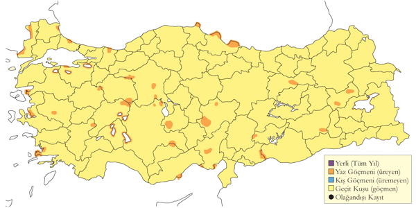
Üreme
Yuvalama alanı: Büyük göller, nehir deltaları ve kıyısal sulakalanlarda çok yoğun ve karışık kolonilerde yuvalar. Genellikle sayıları azdır; 10-30 çift, koloni içindeki diğer türlerin arasında küçük bir payı oluşturur.
Yuvası: Yuva, genellikle çok geniş bir sazlığın ortasındaki ağaçlar, çalılar veya sazlara kurulur. Ağaçta ince dallardan, sazlıkta ise saz gövdelerinden örülmüş sığ bir yapıdır. Ağaç ve çalıdaki yuvalar, gece balıkçılı ve küçük ak balıkçıl yuvalarından belirgin şekilde küçüktür.
Yumurta sayısı: Türkiye’de gözlenen yumurta sayısı 3-5 arasında değişir, Türkiye dışında ise 4-6’dır. Tek gözlemdeki yavru sayısı 4 olarak kaydedilmiştir.
Üreme dönemi: Mayıs ayında yuva yapmaya başlar, haziran ayından itibaren yavrular çıkar ve üreme ağustosa kadar devam eder. MAR. Manyas Gölü’nde 4 Haziran 1970’te ağaçtaki bir kolonide yumurta ve yavrular bulunmuş, bir yuvada dört yumurta, diğer yuvada ise 1-2 haftalık dört yavru görülmüştür (Pforr & Limbrunner, 1982). Yumurtlama tarihinin mayıs başı olduğu hesaplanmıştır. Uluabat Gölü’nde 7 Haziran 1998’de bir söğütlükte çoğunluğunu küçük karabatağın oluşturduğu 1180 çiftlik karışık bir kolonide 109 yuva sayılmış, bu yuvaların çoğunda palazlanmak üzere olan yavrular, bazılarında ise yumurtalar tespit edilmiştir (Welch & Welch, 1998b). 3 Haziran 2006’da yaklaşık 50 yuva incelenmiş, çoğunda 3-5 yumurta, bazıları yumurtadan yeni çıkmış, bazıları palazlanma evresinin yarısında olan çeşitli boyda yavrular görülmüş ve yumurtlamanın nisan sonunda başladığı, yoğun olarak mayıs ayında gerçekleştiği hesaplanmıştır. KAR. Kızılırmak Deltası’nda 5 Mayıs 1992’de yedi erişkin yuva malzemesi taşırken gözlenmiş (Hustings & Dijk, 1994). 27 Ağustos 1984’te gri ve küçük ak balıkçılla karışık bir ağaç kolonisinde 10 çift sayılmış, ağaçların altında birçok ölü yavruya rastlanmıştır (Dijksen & Kasparek, 1985). EGE. İzmir yakınındaki bir gölde 13 Mayıs 1899’da içinde yumurtalar olan iki yuva bulunmuş, yuvaların su seviyesine yakın, sazlıkların dibinde olduğu tespit edilmiştir (Selous, 1900). Bu kolonideki diğer türler büyük ak balıkçıl, küçük ak balıkçıl, gece balıkçılı, çeltikçi ve küçük karabatak olmuştur. AKD. Amik Gölü’nde yılanboyun ve küçük karabataklarla beraber bulunan kolonide 26 Mayıs 1933’te yumurtlamaya başladıkları gözlenmiştir (Meinertzhagen, 1935). İÇA. Sultansazlığı’nda 15 Mayıs 1979’da yuva malzemesi taşıyan erişkinlere rastlanmış ve haziran ayında yuvaladığı görülmüştür (Kasparek, 1985).
Alttürler ve Sınıflandırma
Monotipik bir türdür.
Sığır Balıkçılı
Bubulcus ibis, Western Cattle Egret
Lokal olarak az sayıda bulunan yerli ve yarı göçmen bir türdür.
Çukurova’da Seyhan Nehri boyunca büyük kolonilerde önemli sayılarda ürediği tespit edilmiştir. Osmaniye’de, Ceyhan Nehri üzerinde söğüt ağaçlarıyla kaplı bir adada gece balıkçıllarıyla beraber ürediği bilinirken, 2013 yılında iş makinelerinin bu adayı yok etmesiyle koloni ortadan kalkmıştır. Göksu Deltası’nda düzenli olarak yerli bireyler gözlenmekte ve 1992’de 25 çiftin ürediği belirlenmiştir (Magnin & Yarar, 1997). Iğdır’daki Aras Ovası’nda üreme giysili 150 birey gözlenmesine rağmen, bir üreme kolonisi tespit edilememiştir. Yeşilırmak Deltası’nda düzenli görülmesi üreme olasılığını artırırken, Sultansazlığı’nda da az sayılarda üreme ihtimali mevcuttur.
Geçmişte birkaç landa düzensiz olarak üremiştir. Amik Gölü’nde 1881 yılında üç yumurta toplanmış (Tristram, 1882), 1933 yılında yılanboyun ve küçük karabataklarla karışık bir kolonide yüksek sayılarda ürediği kaydedilmiştir (Meinertzhagen, 1935). 1965-1970 yılları arasında sıkça gözlenmiş; 1965 Eylül’de 150, Eylül 1967’de 94, Ekim 1968’de 130 ve Mayıs 1970’te 30 birey sayılmış, o dönem ürediği düşünülmüştür. En son 1981’de ürediği tespit edilmiştir. Ereğli Sazlığı’nda 1968 yılında 30 çiftlik bir koloni bulunmuş, 1969’da tek bir çift gözlenmiş ve daha sonra kayda değer bir gözlem yapılmamıştır. Ancak 1993 Temmuz’da 60 bireyden oluşan bir grup görülmesine rağmen, ürediklerine dair kanıt bulunamamıştır.
Diğer alanlarda düzensiz ziyaretçi ve az sayıda üreyen yerli ya da yaz göçmeni olma ihtimali vardır. Kızılırmak Deltası’nda 1977’den itibaren az sayıda görülmüş, Manyas ve Uluabat göllerinde düzenli olarak rastlanmıştır. İstanbul’da Karadeniz kıyısında da düzenli gözlemler yapılmıştır. Bu kayıtların mart ile mayıs ortasında yoğunlaşması, bir geçit hareketine işaret eder.
Kışlayan bireylerin çoğu güney kıyılarında bulunur. Kış Ortası Su Kuşu Sayımları (KOSKS) sırasında, Ocak 1996’da toplam 9, Ocak 1999’da ise toplam 13 birey sayılmıştır. Ancak KOSKS’un bu türün gerçek sayılarını yansıtmadığı, çünkü bu türün sulakalanlara bağlı olmadığı söylenebilir. Ortalama kış sıcaklıklarının düşük olması, bu türün yayılması ve yerleşmesine engel olabilir.
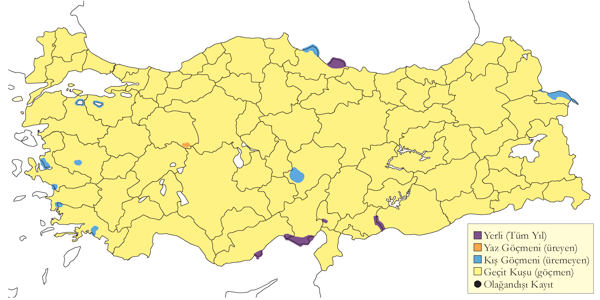
Üreme
Yuvalama alanı: Amik Gölü’nde “birçoğunun” yılanboyun ve karabataklarla beraber sazlıklarda ürediği, yuvaların farklı türlerin bir arada bulunduğu blokların en üst katında olduğu tespit edilmiştir (Meinertzhagen, 1935).
Yuvası: Düzleştirilmiş sazların üzerinde yassı bir yapı üzerinde kuluçkaya yattığı gözlenmiştir. Türkiye dışında yuva, sazlıklarda ölü sazlarla, ağaçta veya çalıda ise çalı çırpı ile örülür.
Yumurta sayısı: Türkiye’de yumurta sayısı hakkında ayrıntılı bilgi yoktur. Türkiye dışında olağan yumurta sayısı 4-6 arasındadır.
Üreme dönemi: Amik Gölü’nde 26 Mayıs 1933’te yumurtlamaya başladıkları tespit edilmiştir (Meinertzhagen, 1935).
Alttürler ve Sınıflandırma
Monotipik bir türdür. (Rasmussen & Anderton, 2005) batılı nominat ibis ve doğulu coromandus alttürlerini tür seviyesine çıkarmış, bunları “batılı sığır balıkçılı” ve “doğulu sığır balıkçılı” olarak isimlendirmiştir. Dolayısıyla türün Türkçe ismi Batılı Sığır Balıkçılı olmalıdır.
Büyük Ak Balıkçıl
Ardea alba, Great Egret, [Vinyet: Sulakalan]
Çok lokal olarak az sayıda yuvalar. Yaygın ve çok sayıda bulunan bir geçit türü ve kış konuğudur.
Kızılırmak Deltası’nda 1992 yılında 11-15 çift yuvalamıştır. Birkaç sulakalanda az sayıda, örneğin Kocaçay Deltası’nda 1-2 çift yuvaladığı kaydedilmiştir. 1991’de Hotamış Sazlığı’nda 50 çift yuvalamıştır (Kirwan, 1993a). Ancak Hotamış ve Ereğli Sazlıkları ile Akşehir Gölü’nde üreyen nüfus ortadan kalkmıştır.
Geçit sırasında ülke genelinde yaygın ve bol miktarda gözlenir. İlkbahar geçişi mart başı ile mayıs ortası arasında, İç Anadolu’da ise en yoğun nisan başında gerçekleşir. Sonbahar geçişi ise ağustos ile ekim başı arasındadır.
Kışın büyük topluluklar halinde kaydedilir. Özellikle orta ve batıdaki kıyı bölgelerinde yüksek sayılarda bulunur, yerli topluluklar kuzeyden gelen göçlerle desteklenir. Kızılırmak Deltası, Meriç Deltası, Marmara Gölü, Büyük Menderes Deltası ve Akyatan Gölü’nde 200-400 kuşluk gruplar kışlar. İç bölgelerde daha az görülür, ılıman kışlarda genellikle 100 kuşluk gruplar sayılabilir.
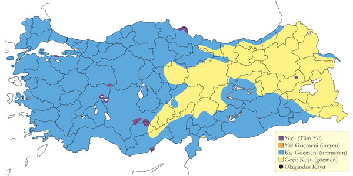
Üreme
Yuvalama alanı: Çok geniş sazlıklarda, büyük koloniler kurmak yerine, birkaç çift mesafeli bir birliktelik oluşturur. Yuvaları geniş bir alana yayılır ve çoğunlukla başka büyük balıkçıl yuvalarının yakınındadır.
Yuvası: Üremesi için yüksek ve yaşlı sazların olması gereklidir. Bu sazlar kuşlar tarafından kırılıp yatırılır ve su seviyesinden yaklaşık 1 metre yüksek bir platform oluşturur.
Yumurta sayısı: Türkiye’de gözlenen yumurta sayısı 2-4 arasında değişir, 9 yuvada ortalama 3,2 olmuştur. Gözlenen yavru sayısı 1-3 arasında olup, çoğunlukla 3 yavru gözlenmiştir.
Üreme dönemi: Üreme dönemi genellikle mart ayında başlar, yumurtlama nisan sonuna kadar devam eder. Yavrular mayıs başında yumurtadan çıkar ve haziran ortasına kadar palazlanır, temmuz ayına kadar uçmaya hazır hale gelirler. KAR. Kızılırmak Deltası’nda 1992’de çok daha fazla sayıdaki erguvani balıkçılın arasında sazlıklarda yuvalamış, 2-10 Haziran’da incelenen sekiz yuvanın çoğunda yumurtalar tespit edilmiş, kalanlarında ise bazıları yumurtadan yeni çıkmış, bazıları ise 2-3 haftalık olan yavrular gözlenmiştir. Buradaki üç yuvadaki yavruların yaşından yumurtlama tarihleri hesaplanmış, bir yumurtanın nisanın son haftasında, diğerinin mayısın ilk haftasında ve sonuncusunun da 17 Mayıs’tan sonra konduğu düşünülmüştür (Hustings & Dijk, 1994). Bu durum, Ereğli Sazlığı’ndan daha erken yumurtladığını ortaya koymaktadır. EGE. 13 Mayıs 1899’da Ege’de içinde iki ve dört yumurta bulunan iki yuva bulunmuştur (Selous, 1900). 28 Mayıs 1895’te “Anadolu’da bir yerde” dört yumurtalı bir yuvaya rastlanmıştır. İÇA. Ereğli Sazlığı’nda 23 Mayıs 1998’de iki ayrı grupta iki veya üç çift gri balıkçılların yakınında yuvalamış, her bir yuvada yaklaşık 2 haftalık üç yavru görülmüş, yumurtlamanın nisanın ilk haftasında olduğu hesaplanmıştır.
Alttürler ve Sınıflandırma
Türkiye’de nominat alttürü bulunur.
Gri Balıkçıl
Ardea cinerea, Grey Heron, [Vinyet: Sulakalan]
Yaygın ve çok sayıda bulunan bir yerli tür, geçit türü ve kış konuğudur.
Genellikle ormanlık alanlarda, sulakalanların çevresinde ve nehir boylarında küçük koloniler halinde yuvalar. Sulakalanlara bağımlı bir tür olmadığı için bilindiğinden daha yaygın olabilir. En kalabalık koloniler Manyas Gölü, Bafa Gölü ve 190-200 çiftin bulunduğu Kızılırmak Deltası’nda bilinir.
İlkbahar geçişi mart ortası ile mayıs sonu arasında gerçekleşir (Albrecht, 1986), sonbahar geçişi ise ağustos ile ekim ortasında gözlenir. Göç sırasında Karadeniz kıyısında göçmen sürüler sıkça görülür. 1971 Eylül’ünde İstanbul Boğazı’nda güneye uçan 550 birey sayılmıştır. Orta ve batı bölgelerinde, özellikle kıyısal alanlarda kayda değer sayılarda kışlar.
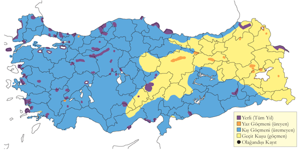
Üreme
Yuvalama alanı: Suya yakın, özellikle ağaç ve sazlıklarda birkaç çift ile birkaç yüz çift arasında değişen kolonilerde yuvalar. Hem saf koloni, hem de leylek, karabataklar ve diğer balıkçıllarla beraber karışık koloniler oluşturur. Göllerdeki toprak adalarda yerde de yuvalar.
Yuvası: Ağaçtaki yuvası dallardan, sazlıktaki yuvası sazlardan örülür.
Yumurta sayısı: Türkiye’de gözlenen yumurta sayısı 3-5 arasındadır.
Üreme dönemi: Türkiye genelinde yumurtlama genellikle mart ayında başlar ve nisan sonuna kadar devam eder. Yavruların yumurtadan çıkışı çoğunlukla mayıs başında gerçekleşir. Yavrular haziran ortasından itibaren palazlanmaya başlar ve temmuz ayına kadar uçmaya hazır hale gelirler. Bazı kolonilerde telafi çabaları nedeniyle üreme süreci daha geç tarihlere uzayabilir. MAR. Trakya’da bir yerde yuvaların marttan itibaren tutulduğu gözlenmiş, 25 Nisan 1970’te çoğunda yavru bulunan 30 yuva sayılmıştır. KAR. Kızılırmak Deltası’nda 14-21 Haziran 1984’te palazlanmak üzere yavrular bulunan 30 yuva, Temmuz 1971’de 48 yuva, Temmuz 1972’de ise 25 yuva sayılmıştır (Dijksen & Kasparek, 1985). 3 Haziran 1992’de ağaçlarda bazıları palazlanmak üzere olan yavrularla dolu 111 yuva görülmüş, üremenin 20 Mart’ta başladığı hesaplanmıştır. Sazlıklarda ise 7 Haziran 1992’de hem yumurta hem de her yaşta yavru bulunan 47 yuva tespit edilmiştir (Hustings & Dijk, 1994). EGE. En erken üreme kayıtları Ege Bölgesi’ndendir. Büyük Menderes Deltası Karina Gölü’nde 23 Nisan 2003’te tamamen palazlanmış bir yavru ve Bafa Gölü’nde 1 Mayıs 2003’te uçmaya başlamış iri yavrular görülmüş, yumurtlama tarihinin şubat ortası olduğu hesaplanmıştır. Bafa Gölü’nde 13 Mayıs 1980’de 13 yuvanın bazılarında iri yavrular gözlenmiş (Kasparek, 1988). 3 Mayıs 2001’de her yaşta yavrular ve hatta yumurtalar, 27 Haziran 1999’da ise yumurta ve farklı yaşlarda yavrular tespit edilmiş, yumurtaların kayıpları telafi etmek amacıyla geciktiği düşünülmüştür. İÇA. Ereğli Sazlığı’nda 23 Mayıs 1998’de ziyaret edilen yuvalarda iri yavrular görülmüştür. Kızılcahamam’da 18 Mart 1984’te 19 yuvada kuluçkaya yatan kuşlar görülmüş (Barış, Akçakaya & Bilgin, 1984), Eskişehir’de 19 Mayıs 1907’de bir ağaçta çoğunda yavru görülen 20 yuva sayılmıştır (Ramsay, 1914).
Alttürler ve Sınıflandırma
Türkiye’de nominat alttürü bulunur.
Erguvani Balıkçıl
Ardea purpurea, Purple Heron, [Vinyet: Sulakalan]
Nispeten lokal olarak üreyen, göç döneminde daha yaygın bir alanda yayılış gösteren yaz konuğudur.
Kızılırmak Deltası’nda 1992 yılında 475-500 çiftin yuvaladığı tespit edilmiş, bu alanın ülkedeki en önemli üreme bölgesi olduğu belirlenmiştir (Hustings & Dijk, 1994). Doğu Anadolu’da uygun yaşam alanlarının azlığı nedeniyle üremediği düşünülmektedir. Son yıllarda birçok sulakalanda sayılarında azalma olduğuna dair bulgular vardır.
İlkbahar geçişinde, güney bölgelerinde mart ortasından itibaren, iç bölgelerde ve Karadeniz Bölgesi’nde ise yaklaşık 2-3 hafta sonra görülmeye başlanır. En yoğun dönem mayıs başı olup, geçişi mayıs ortasına kadar devam eder. Sonbaharda ülke genelinde daha yaygın ve kalabalık gruplar halinde gözlenir. Yoğun olarak ağustos sonu ile eylül başı arasında geçiş yapar, geç kalan bireyler ise kasım ortasına kadar görülebilir. Sonbahar göçü sırasında Güneydoğu Anadolu’da nehir vadilerini takip eder. İstisnai olarak, Kızılırmak Deltası’nda 30 Ağustos 1982’de 1400 birey gözlenmiştir.
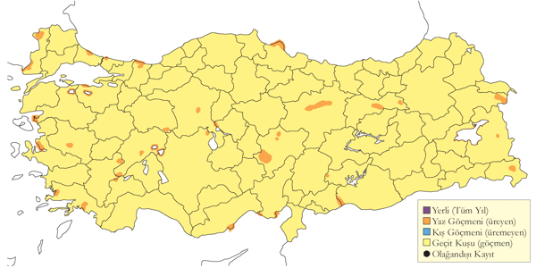
Üreme
Yuvalama alanı: Genellikle çok geniş ve yaşlı sazlar (Phragmites) içinde yuvalar. Bazen kalabalık kolonilerde, bazen de Kocaçay Deltası’nda olduğu gibi 3-5 çiftlik seyrek birliktelikler oluşturur (Ertan, 1996).
Yuvası: Yuva, eski sazların kırılmasından oluşan sudan yüksekte bir platformun üzerine kurulur. Hatırı sayılır bir kütle oluşturur ve içi derin değildir. Ağaç veya çalıdaki yuvaları ise dallarla örülür. Çoğu koloni, sazlık alanlarda veya suya yakın ağaçlarda yuvalarını kurar. Yuvalar genellikle sudan birkaç metre yukarıda sazlar ya da dallarla inşa edilir.
Yumurta sayısı: Genellikle 3-5 yumurta koyar.
Üreme dönemi: Çoğu bölgede yumurtlama nisan ayının sonlarına doğru başlar ve mayıs başına kadar devam eder. Yavrular, mayıs ortasında yumurtadan çıkar ve ilk yavrular genellikle mayıs sonuna doğru görülmeye başlanır. Yumurtlama ve yavruların çıkışı, koloniler arasında farklılık gösterebilir. Yavrular haziran başına kadar palazlanmaya devam eder. MAR. Manyas Gölü’nde karabataklar, diğer balıkçıllar ve kaşıkçılarla beraber karışık bir kolonide ağaçta yuvalamıştır. Uluabat Gölü’nde 9 Mayıs 1970’te sudan yaklaşık 2 metre yukarıda sazlara kurulmuş yuvalar bulunmuş, çoğu yuvada iki yumurtanın olduğu tespit edilmiştir. Yumurtlamanın henüz sonlanmadığı fikrine varılmıştır. Manyas Gölü’nde 1966’da bir sazlığın içindeki sudan 1-3 metre yukarıdaki söğütlerde altı yuva bulunmuş, bu yuvalardan birinin sadece söğüt dallarıyla, diğerlerinin hem dallar hem de saz gövdeleriyle örülmüş olduğu not edilmiştir. 27 Nisan’da boş olan yuvada 28 Nisan’da bir, 3 Mayıs’ta ise üç yumurta sayılmıştır. Diğer bir yuvada 28 Nisan’da bir yumurta, 3 Mayıs’ta üç yumurta tespit edilmiştir. Diğerlerinde 29 Nisan’da bir yuvada beş yumurta, 3 Mayıs’taki üç yuvada ise dörder yumurta görülmüştür. Terkos Gölü’nde 24 Nisan 1981’de bir adadaki küçük ağaçlarda 15 erişkin yuva yaparken gözlenmiştir. KAR. Kızılırmak Deltası’nda yuvalayan 475-500 çift, dört grup veya koloni halinde dağılmıştır. Kızılırmak Deltası’ndaki 1992 yılındaki detaylı çalışmada çok geniş ve kesilmemiş bir sazlıkta dört koloni bulunmuş, yuvaların sudan 50 ila 80 cm yukarıda olduğu saptanmıştır. 153 yuvada üç yumurta, 158 yuvada dört yumurta sayılmış, bir kolonide ilk yumurtlama tarihinin 21 Nisan, diğer bir kolonide ise bir hafta sonra başladığı, ilk yavruların 17 Mayıs’ta görüldüğü ve çoğunlukla bundan yaklaşık bir hafta sonra çıktığı tespit edilmiştir (Hustings & Dijk, 1994).
Alttürler ve Sınıflandırma
Türkiye’de nominat alttürü bulunur.
Çeltikçi
Plegadis falcinellus, Glossy Ibis, [Vinyet: Sulakalan]
Lokal ve az sayıda bulunan bir yaz konuğudur. Göç döneminde yaygın ve çok sayıda rastlanır.
Geniş bataklık sulakalanlarda genellikle küçük koloniler halinde ürer. Çoğu kolonide 50 çiftten az sayıda üreme kaydedilirken, Meriç Deltası’nda yaklaşık 100 çiftin ürediği tespit edilmiştir. 1968’de Marmara Gölü’nde 200-300 kuşun ürediği bilinmektedir. İç Anadolu’daki popülasyonu ciddi bir düşüş yaşamıştır. 20. yüzyılın başlarında Antakya’daki Amik Gölü ve 1800’lerde Büyük Menderes Deltası’nda ürediği kaydedilmiştir. Uzun süren ilkbahar göçleri, bu türün üreme durumunun anlaşılmasını zorlaştırır. Özellikle Karadeniz Bölgesi’nde küçük gruplar yazı üremeden geçirebilmektedir.
1950’ler ve 1960’larda 16-24 farklı alanda yaklaşık 2.500-2.795 çiftin ürediği tahmin edilir. Bu dönemde Meriç Deltası, Manyas Gölü ve Amik Gölü en büyük üreme popülasyonlarını barındırıyordu ve sadece bu üç bölgede bilinen toplam üreme popülasyonu 2.000 çifte kadar ulaşmıştı. 2000’lerde Türkiye üreme popülasyonunun sadece 500 ile 1.000 çift arasında tahmin edildi. 2010’lı yıllarda düzenli olarak sekiz alanda üremektedir. Mevcut üreme popülasyonu 282-421 çift arasında tahmin edilmektedir (Onmuş & Karauz, 2019).
Göç sırasında bazı bölgelerde yüksek sayılarda gözlenir. 26 Temmuz 2004’te Meriç Deltası’nda 1200, 27 Nisan 1992’de Kızılırmak Deltası’nda 590 birey sayılmıştır. İlkbahar göçü mart ortasından haziran başına kadar sürer ve nisanın ikinci yarısında zirve yapar. Sonbahar göçü ise ağustos başından ekim başına kadar devam eder ve çoğu birey eylül ortasında ülkeyi terk eder. Kış aylarında ise nadiren az sayıda görülebilir.
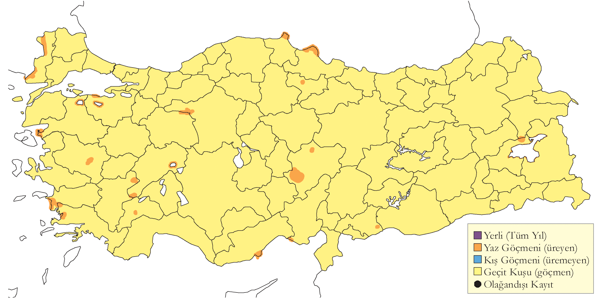
Üreme
Yuvalama alanı: Diğer türlerle karışık koloniler halinde iç su gölleri, sazlıklar ve kıyısal alanlarda ürer. Koloniler bazen yüzlerce kuştan oluşur, ancak genellikle 10-30 çift bulunur ve diğer türlerin arasında azınlıkta kalır.
Yuvası: Ağaç ve çalılıklarda, bazen subasar alanlarda veya geniş sazlıklarda yuvalar. Yuva, ince dallardan oluşan sığ bir yapıdır; eğer ağaç veya çalılıkta yapılmışsa çimen ve yapraklarla, sazlıklarda ise sazlarla çevrelenir.
Yumurta sayısı: Türkiye’de gözlenen yumurta sayısı 3-5 arasında olup, çoğunlukla 4’tür. Gözlenen yavru sayısı 3 veya 4’tür.
Üreme dönemi: Yumurtlama genellikle mayıs başında gerçekleşir. Yavruların yumurtadan çıkışı haziran başında gözlenmiştir. Palazlanmış yavrular, haziran ortasından itibaren yuvalarda görülmeye başlanır ve temmuz ayına kadar gelişim süreçleri devam eder. Bazı bölgelerde yumurtlamanın devam ettiği gözlenmiştir, bu da üreme döneminin zamana yayıldığını göstermektedir. MAR. Manyas Gölü’nde ağaçtaki bir yuvada 3 Haziran 1970’te yumurtadan yeni çıkmış bir yavru ve 4-6 Haziran 1970’te de yaklaşık 2 haftalık üç yavru bulunmuştur (Pforr & Limbrunner, 1982). Bu tarihlere göre yumurtlamanın 1-10 Mayıs arasında gerçekleştiği düşünülmüştür. Uluabat Gölü’ndeki bir ağaçlıkta 6 türün karışık kolonisi içinde 14 çeltikçi yuvası tespit edilmiş, 7 Haziran 1998’de bazı yuvalarda palazlanmış yavrular, diğerlerinde ise yumurtalar gözlenmiştir (Welch & Welch, 1998b). 3 Haziran 2006’da yine aynı kolonide en az 40 çeltikçi yuvası sayılmış, yuvaların çoğunun subasar bir bölgedeki söğüt ağaçlarının alt dallarında olduğu, bazılarının suda yüzen sazlardan yapıldığı tespit edilmiştir. Çoğu yuvada yumurtadan yeni çıkmış yavrular gözlenmiş, yumurtaların en geç mayıs başında koyulduğuna karar verilmiştir. EGE. Marmara Gölü’nde kaşıkçı, küçük karabatak ve küçük ak balıkçıl ile karışık bir kolonide diğer türlerin yuvalarında yumurtalar gözlenirken, çeltikçi yuvalarının henüz boş olduğu tespit edilmiştir (McNeile, 1950, 1951, 1954, 1967, 1968, 1970, 1972, 1973). 13 Mayıs 1899’da İzmir yakınlarındaki karışık bir kolonide hem çeltikçinin, hem diğer türlerin yuvalarında yumurtlamanın başladığı kaydedilmiştir (Selous, 1900). AKD. Amik Gölü’nde sazlıklarda yılanboyun ve diğer türlerle karışık bir kolonide birkaç çeltikçi çifti bulunmuştur (Meinertzhagen, 1935). Buradaki çeltikçi yuvalarının sazların dibinde olduğu ve 26 Mayıs 1933’te yumurtaların yeni koyulmuş olduğu tespit edilmiştir. İÇA. 18 Mayıs 1987’de Ereğli Sazlığı’nda balıkçıl ve küçük karabatakla karışık bir kolonide 12 yuva sayılmıştır. Çoğu yuvada 4, iki yuvada 3 yumurta tespit edilmiştir. Yuvaların bazılarında yumurtlamanın devam ettiği düşünülmüştür. 22-25 Temmuz 1971’de Yarma Bataklığı’nda tüyleri çıkmış birçok yavru gözlenmiştir.
Alttürler ve Sınıflandırma
Monotipik bir türdür.
Kelaynak
Geronticus eremita, Northern Bald Ibis, [Vinyet: CR (2016)]
Yabani soyu tükenmiş, doğal olarak bulunduğu son alanda kafese alınan kuşların soyundan gelen lokal ve yerli bir popülasyonu vardır.
Bugünkü kuşların tamamı, yabani popülasyonun yaşadığı yerde esarete alınmış kuşların soyundan gelmektedir. Yarı yabani bu kuşlar, yıl boyunca Birecik’te bulunmaktadır. Yabani olan yaz konuğu kuşlar, şubat ayında gelir ve temmuz başında üreme alanlarını terk ederdi. 1879’da ilk çift 16 Şubat’ta, ilk büyük sürü ise 18 Şubat’ta gözlenmiştir (Danford, 1880).
Birecik kolonisi, ilk kez Haziran 1839’da Ainsworth tarafından bahsedilmiş, bu koloninin yaşı ise tam olarak bilinmemektedir. Ainsworth ayrıca Birecik’in 70 km kuzeydoğusunda, Yaylak’ta bir örnek toplamıştır. 1879’da Danford, bu koloninin kalabalık olduğundan söz ederken, Tristram iki yıl sonra bu koloni hakkında yazmıştır. 1911’de Weigold, 1000’den fazla birey saymış, 1950’lerde yapılan ziyaretlerde ise 400-500 kuş tespit edilmiştir. Haziran 1953’te Kumerloeve, yaklaşık 1300 birey saymış, ancak bu rakama muhtemelen yavrular da dahil edilmiştir.
1956-1959 yılları arasında Fırat Nehri boyunca sıtma ile mücadele kapsamında DDT ve Dieldrin içeren kimyasallar kullanılmıştır. Aynı dönemde, Tarım Bakanlığı da tarımsal üretimi çekirge istilasından korumak için bu kimyasalları kullanmıştır. Bu kimyasal müdahaleler, kelaynak popülasyonu üzerinde felaket derecesinde bir etki yapmış, kuşların %70’ine denk gelen 600-700 birey zehirlenerek ölmüş, sonraki 10-12 yıl boyunca üreme başarıları neredeyse sıfıra inmiştir. 1965’te 70-75, 1970’te 30, 1972-1973’te ise yalnızca 26 kullanılan yuva sayılmıştır.
1972-1973 yıllarında WWF (Doğal Hayatı Koruma Vakfı), koloniyi koruma altına almak için bir program başlatmıştır. Bu programın amacı, koloninin yaşadığı alanı avcılıktan korumak, bölgeyi temizlemek ve kuşların uzman gözetiminde üremelerini sağlamaktı. 1982’de koloni kuzeye taşınmış ve esarette beslenip üretilen kuşlar doğaya salınmaya başlanmıştır. Ancak, Kelaynak Üretme İstasyonu’ndaki yetersiz bilgi ve uzman eksikliği nedeniyle üretme çalışmaları beklenen başarıyı sağlayamamış, hatta yabani kuşların üreme oranı esaretteki kuşlardan daha yüksek kalmıştır.
1977-1983 yılları arasında esarette üretilen 23-34 sağlıklı yavru doğaya bırakılmış, fakat çoğu, vahşi kuşlarla göç edememiş ve dağılmış, büyük olasılıkla soğuk kış koşullarında ölmüştür. Sonuç olarak, 1982’de üreyen çift sayısı 6’ya düşmüş, 1989’da koloniye yalnızca 3 birey geri dönmüştür. Bunlardan ikisi ya öldürülmüş ya da fırtına sırasında kaybolmuştur. Böylece, Türkiye’deki yabani popülasyonun 1989’da tükenmiş olduğu kabul edilmiştir (Peter, 1990; Akçakaya & Akçakaya, 1992).
1996-2000 yılları arasında Biyolog Okan Arıhan’ın Bakanlık bünyesindeki çalışmaları sonucunda, yarı yabani kolonide hala göç eden bir bireyin olabileceği ihtimali ortaya çıktı. 1990-2000 yılları arasında koloni, tüm olumsuz koşullara rağmen yılda ortalama 25 yavru üretti; ancak bu yavruların çoğu zamanında kafese alınmadığı için koloniden ayrılarak muhtemelen kayboldu. 2000 yılında popülasyon 42 kuşa düşmesine rağmen, koloniyi izleme ve üreme başarılarını artırmaya yönelik çalışmalar başarılı olmuş ve 2002’de 17 genç kuşun başarıyla palazlandığı kaydedilmiştir.
Fas’taki son yabani kolonideki kuşların sayısının azalması ve 2002’de Suriye Palmyra’da küçük bir yabani koloninin keşfedilmesiyle (Serra & Assaed, 2005), Birecik’teki yarı yabani kuşlar yeniden koruma programlarının odağına alınmıştır. 2013’te göçe salınan beş kuşun vericiler aracılığıyla Palmyra’ya ulaştığı tespit edilmiş, ancak Ürdün’de bir su kaynağında zehirlenerek öldükleri anlaşılmıştır. 2016 itibariyle Birecik kolonisi başarılı bir şekilde üremeye devam etse de, Ortadoğu’daki savaş ve kaçak avcılık baskısı nedeniyle kuşlar göçe salınamamaktadır.
Birecik dışında, Amik Gölü (Antakya) bölgesinde de iki örnek toplanmıştır (Chantre, 1883). Bu kuşlar muhtemelen Suriye veya Birecik’ten göç eden bireylerdir. Ayrıca, 22 Ağustos 1995’te Uludağ’da kökeni belirsiz bir genç birey kaydedilmiştir (Jetz, 1995). Bu kuşun, Avusturya’dan gelen yarı evcil bir kuş veya Birecik’ten dağılmış yarı yabani bir birey olabileceği düşünülmektedir.
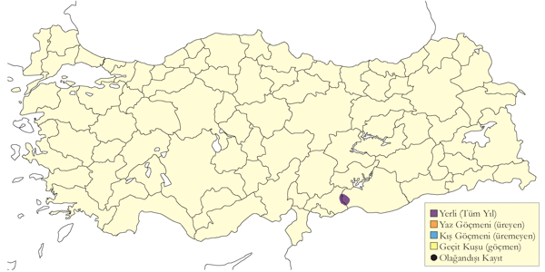
Üreme
Yuvalama alanı: Birecik’teki koloni, Fırat kıyısındaki dik kayalık yarlarda, tür koruma çalışmaları kapsamında yapılmış suni çıkıntılar ve oyuklarda üremektedir. Kuşların çoğu Kelaynak Üretme İstasyonu’nda yuvalarken, bazıları yan vadide, bazı sıradışı çiftler ise şehre yakın yarlarda yuva yapmaktadırlar.
Yuvası: Yuva, bitki gövdeleri ve köklerinden oluşan sığ bir yığındır.
Yumurta sayısı: Genellikle 3-4 yumurtaya yatar. 1973’te toplam 23 yuvada 80 yumurta koyulmuş, ortalama yumurta sayısı 3,5 olmuştur.
Üreme dönemi: 1969’da yumurtlama döneminin mart sonunda başlayıp nisan ortasına kadar sürdüğü gözlenmiştir (Warncke, 1972). 5 Mayıs 1870’te 36 yuva gözlenmiş ve ayrıntılı olarak incelenen 11 yuvadan dördünde üçer yavru, dördünde ikişer yavru, üçünde ise birer yavru tespit edilmiştir. 1971 yılında Mart sonu ile 10 Nisan arasında kuluçkaya başladıkları gözlenmiştir (Warncke, 1972). Yuvalarda gözlenen yavruların büyüklüğüne göre 1993, 2001 ve 2004’te üreme döneminin zamanlaması çok benzerdir.
Alttürler ve Sınıflandırma
Monotipik bir türdür. Türkiye-Suriye popülasyonu ile Fas popülasyonu arasında genetik farklılıklar vardır.
Kaşıkçı
Platalea leucorodia, Eurasian Spoonbill, [Vinyet: Sulakalan]
Lokal olarak ve az sayıda ürer. Göç sırasında ve kışın yaygın ve çok sayıda bulunur.
Düzenli olarak ürediği başlıca alanlar Manyas Gölü, Uluabat Gölü, Kızılırmak Deltası (76 çift) ve Bolluk Gölü’dür. Murat Nehri çevresinde, Bulanık ve Muş’taki Haçlı Gölü’nde 1980’lerden bu yana üreme kayıtları olmasına rağmen, Doğu Anadolu’dan son yıllarda kesin üreme kaydı alınmamıştır. Göller Bölgesi ve İç Anadolu’nun güneyindeki sulakalanlarda üremesi olasıdır. Son yıllarda hem sayıları hem de üreme başarıları giderek azalmaktadır. Manyas Gölü’nde izlenen koloninin uzun süreli bir düşüş yaşadığı belirlenmiş; 1966’da 835 çift olan popülasyon, 1995’te yaklaşık 200 çifte kadar gerilemiştir. Eskiden sadece yaz göçmeni olan bu popülasyon, bazı kuşların kışlamaya başlamasıyla yarı göçmen nitelik kazanmıştır. Antakya’daki Amik Gölü’nde en azından 1960’ların sonuna kadar ürediği kaydedilmiştir (Vielliard, 1968). 1839’da Erzurum yakınlarındaki Karasu Nehri’nde ve muhtemelen 19. yüzyılda İzmir çevresinde de ürediği bilinmektedir (Gonzenbach, 1852).
Göç sırasında genellikle küçük gruplar halinde görülür. İlkbahar göçü nisan başı ile mayıs sonu arasında yoğunlaşırken, sonbahar göçü ağustos başından ekim başına kadar sürer. İstanbul Boğazı’nda nadiren gözlenirken, Belen Boğazı’nda 6 Ağustos-21 Eylül 1976 tarihleri arasında toplam 816 kuş kaydedilmiştir (Sutherland & Brooks, 1981). İç Anadolu’daki bazı sulak alanlarda sonbaharda kalabalık sürüler görülebilir. Kışın Ege ve Akdeniz kıyı bölgelerinde en fazla 60 bireylik gruplar kaydedilmiştir.
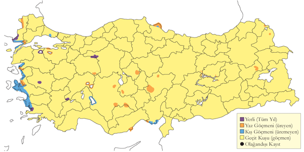
Üreme
Yuvalama alanı: Genellikle balıkçıllar ve karabataklar ile karışık kolonilerde yuvalar. Yuvalar, yoğun sazlıklarda sudan yüksekte yapılır. Çoğunlukla birkaç çift halinde, bazen yüzlerce çiftten oluşan kolonilerde yuvalar.
Yuvası: ve yuvalar sudan yüksekte, sazlıkların üzerinde bulunur.
Yumurta sayısı: Türkiye’de gözlenen yumurta sayısı 3 ile 4 arasında değişir. 31 gözlemde 3, 49 gözlemde 4 yumurta görülmüştür. Gözlenen yavru sayısı genellikle 4’tür.
Üreme dönemi: Yuva yapmaya mart ayında başlar. Yuvalama dönemi geniş bir zamana yayılır. Aynı kolonide haziran sonuna kadar hem palazlanmış yavrular hem de yumurta görülebilir. Farklı kolonilerde yumurtlama tarihi değişkenlik gösterir. MAR. Manyas Gölü’nde 2 Mayıs 1966’da dört yuvada 3-4 yumurta, iki yuvada ise 1-2 yumurta tespit edilmiştir. Yuvaların tamamı genç söğüt ağaçlarına kurulmuş olup, üç yuva yerden 6 metre yükseğe inşa edilmiştir. 15 Nisan 1970’te yumurtadan çıkan yavrular yumurtlamanın mart ortasında başladığını göstermektedir. 9 Mayıs’ta büyümüş yavrular kaydedilmiştir. 28 Haziran 1972’de koloninin tekrar ziyaret edilmesiyle yavruların çoğunun palazlandığı, ancak bir kısmının hala yuvada olduğu gözlenmiştir. Mayıs 1969’da aynı kolonide 500 çift sayılmış, 14 Mayıs’ta uçabilen en az 10 yavru tespit edilmiştir. 2006’da Uluabat Gölü’nde, güney sazlığındaki karışık bir kolonide birkaç çift yuvalamış, iki yuva subasar söğütlerde sudan 4 metre yukarıda bulunmuştur. 3 Haziran’da bu yuvalardan birinde 4 yumurta, diğerinde ise iki büyümüş yavru tespit edilmiştir. KAR. Kızılırmak Deltası’nda 1992’de iki koloni tespit edilmiş, yayılmış söğüt kümelerinde bulunan kuşlar mart sonunda yumurtlamaya başlamıştır. Diğer kolonide yumurtlama 12-27 Nisan tarihleri arasında gerçekleşmiştir (Hustings & Dijk, 1994). EGE. Marmara Gölü’nde 13 Mayıs 1950’de kolonideki yuvaların çoğunun boş, bazılarının ise yumurtalı olduğu gözlenmiş, 30 Nisan 1951’de koloni tekrar ziyaret edilmiştir. Bu ziyarette birkaç yuvada yeni bırakılmış yumurtalar tespit edilmiştir (McNeile, 1950, 1951, 1954, 1967, 1968, 1970, 1972, 1973). İÇA. Bolluk Gölü’ndeki yuvalar, gölün ortasındaki adacıklarda çamur zemin üzerinde bulunur. İnce dallar ve atıklardan örülmüş yuvalar yerden en fazla 0,6 metre yükseklikte inşa edilmiştir. 7 Mayıs 1993’te yuvalarda hem yumurta hem de yeni çıkmış yavrular gözlenmiş, yumurtlamanın nisan başında başladığı hesaplanmıştır. 24 Haziran 1993’te yavruların çoğunun palazlandığı, ancak bazı yuvalarda hala yumurta olduğu görülmüştür. 23 Nisan 2004’te 25 yuvada ortalama 3-4 yumurta tespit edilmiş, bir yuvada iki yumurtanın yanında yumurtadan yeni çıkmış bir yavru gözlenmiştir. Buna göre, yumurtlamanın mart sonunda başladığı hesaplanmıştır.
Alttürler ve Sınıflandırma
Türkiye’de nominat alttürü bulunur.